B2 · Fable 5.2 · attempt oAc87q5
Batch fb2 · job fb2_B_EXP22004082_26_Oct_2022_claude-fable-5-2 · trial B_EXP22004082_26_Oct_2022__oAc87q5. Long tool outputs are cut at 6,000 characters.
0.60
27.4
$8.12
478
86
cd /task; cat inputs/plan.md; echo ----; cat inputs/plate_layout.csv; ls -la inputs/raw outputs; ls /root/.claude/projects/-task/memory/ 2>/dev/null; head -c 1500 inputs/start.flow
# Plan: EXP22004082 | Testing Flow Cytometry based Caspase Assays (run of 2022-10-25 / 2022-10-26) Notebook text as written by the scientist, up to acquisition of this run. Sections belonging to other runs of this entry are omitted. Row and column labels in the plate tables were added for readability. ## Background Loss of function of PGRN has been shown to negatively impact neural cell health reflected by increased cell death and caspase activity. Caspases are important mediators of the cell death pathway (apoptosis). Caspases are a group of proteases that result in cleavage of protein substrates subsequently leading to cell disassembly. For the PGRN RNAswap program we will want to measure caspase activity in iPSC derived neurons before and after adding the PGRN RNAswap constructs to ensure that PGRN protein replacement is rescuing the health of neurons. Previously I have tested out some caspase activity kits but now I will be trying to detect caspase levels using flow cytometry. ## Objective Measure caspase 3 activity using flow cytometry in H4 cells to practice using this assay which will eventually be used in iPSC derived neurons. ## Materials (entry-level list) - H4 WT cells - H4 PGRN KO E1 - H4 PGRN KO E3 - H4 media - CellEvent Caspase-3/7 Green Flow Cytometry Assay Kit - Cell Signalling (Cleaved Caspase-3 (Asp175) Antibody (Alexa Fluor® 488 Conjugate) #9669) - Camptothecin (abcam) ## DAY 2022-10-25 Test out Cell Signaling Cleaved-Caspase 3 Alexa-flour 488 antibody - Split H4 cells into 24 well plate (50K cells/well) | | 1 | 2 | 3 | 4 | 5 | 6 | |---|---|---|---|---|---|---| | A | WT | WT | WT | WT | WT | WT | | B | E1 | E1 | E1 | E1 | E1 | E1 | | C | E3 | E3 | E3 | E3 | E3 | E3 | | D | | | | | | | 2. Let cells grow for o/n ## DAY 2022-10-26 Run Intracellular flow: ### Materials - 96w round bottom plate - Intracellular Fixation & Permeabilization Buffer Set (cat. no. 88-8824) - Flow Cytometry Staining Buffer (cat. no. 00-4222) - Zombie NIR Biolgend (423105) - Caspase-3 antibody (9669S) ### Procedure - Aspirate all media - PBS wash (200uL PBS) - Aspirate PBS - Add 10x Trypsin (150ul/well) - Put back in incubator (5min) - Add FBS (75ul/well) - Move all solution and cells to a round-bottom 96w plate. Check the empty plate by microscope to confirm that the majority of cells were lifted - Spin down (300g, 5min) - PBS wash (200uL PBS) - Aspirate PBS - Stain with Zombie NIR (1:200 dilution in PBS, 150ul/well) - Put back in incubator (15min) - Spin down and remove all Zombie NIR with a P200 multichannel - Fix the cells in IC Fixation Buffer (200uL/well, 30min, RT, dark). Pipet gently to resuspend cells - Spin down (400-600g, 5min, RT) (400xg this time) - Remove all solution with a P200 multichannel **Do not throw fix down the drain!! Collect and add to waste container in hood - Permeabilize the cells in 1X Permeabilization Buffer (200uL/well, 30min, RT, dark). - Spin down (400-600g, 5min, RT). - Remove all solution with a P200 multichannel **Do not throw fix down the drain!! Collect and add to waste container in hood - Resuspend cells with 100uL/well with 1X Permeabilization Buffer. - Prepare antibodies in 100 uL/well of 1x Permeabilization Buffer. Example: for a final 1:200 dilution, add 1 ul Ab to 100 ul of pearmeabilization buffer. Add to well which already has 100 ul of buffer (final dilution is 1:200). Without washing, add the antibody solution of intracellular antigen(s) to cells and incubate for at least 30 minutes at RT and protect from light. Alternatively, incubate overnight at 4C (200ul/well, dark). For Caspase antibody: 1:50 (4uL into 96uL buffer). Will also try 1:100 (2uL into 98uL buffer) - Spin down (400-600g, 5 min, RT) - Add 200 µL of 1X Permeabilization Buffer to each well and centrifuge samples at 400-600 x g (400xg this time) at room temperature for 5 minutes. Discard the supernatant. - Repeat last step - Resuspend stained cells in an appropriate volume of Flow Cytometry Staining Buffer. - Analyze by flow cytometry (ATTUNE). ### Attune Voltage Settings FSC-20; SSC-290; BL1 (caspase)-250; RL3 (Zombie NIR)-350 ### Flow plate (96-well) | | 1 | 2 | 3 | 4 | 5 | 6 | 7 | 8 | 9 | 10 | 11 | 12 | |---|---|---|---|---|---|---|---|---|---|---|---|---| | A | WT no stain | WT caspase only (1:100) | WT zombie only | WT-1 caspase @ 1:100 | WT-2 caspase @ 1:50 | WT-3 caspase @ 1:50 | E1 no stain | E1 caspase only (1:100) | E1 zombie only | E1-1 caspase @ 1:100 | E1-2 caspase @1:50 | E1-3 caspase @ 1:50 | | B | E3 no stain | E3 caspase only (1:100) | E3 zombie only | E3-1 @ 1:100 | E3-2 caspase @ 1:50 | E3-3 caspase @ 1:50 | | | | | | | ---- file,well,sample,cell_line Caspase_h4_mlk(4)_caspase_Group_A1_WT_no stain.fcs,A1,WT no stain,WT Caspase_h4_mlk(4)_caspase_Group_A2_Wt_caspase_1-100.fcs,A2,WT caspase only (1:100),WT Caspase_h4_mlk(4)_caspase_Group_A3_Wt_zombie.fcs,A3,WT zombie only,WT Caspase_h4_mlk(4)_caspase_Group_A4_Wt-1_1-100.fcs,A4,WT-1 caspase @ 1:100,WT Caspase_h4_mlk(4)_caspase_Group_A5_wt-2_1-50.fcs,A5,WT-2 caspase @ 1:50,WT Caspase_h4_mlk(4)_caspase_Group_A6_wt3_1-50.fcs,A6,WT-3 caspase @ 1:50,WT Caspase_h4_mlk(4)_caspase_Group_A7_E1_no stain.fcs,A7,E1 no stain,E1 Caspase_h4_mlk(4)_caspase_Group_A8_E1_caspase_1-100.fcs,A8,E1 caspase only (1:100),E1 Caspase_h4_mlk(4)_caspase_Group_A9_E1_zombie.fcs,A9,E1 zombie only,E1 Caspase_h4_mlk(4)_caspase_Group_A10_E1-1_1-100.fcs,A10,E1-1 caspase @ 1:100,E1 Caspase_h4_mlk(4)_caspase_Group_A11_E1-2_1-50.fcs,A11,E1-2 caspase @1:50,E1 Caspase_h4_mlk(4)_caspase_Group_A12_E1-3_1-50.fcs,A12,E1-3 caspase @ 1:50,E1 Caspase_h4_mlk(4)_caspase_Group_B1_E3_no stain.fcs,B1,E3 no stain,E3 Caspase_h4_mlk(4)_caspase_Group_B2_E3_caspase_1-100.fcs,B2,E3 caspase only (1:100),E3 Caspase_h4_mlk(4)_caspase_Group_B3_E3_zombie.fcs,B3,E3 zombie only,E3 Caspase_h4_mlk(4)_caspase_Group_B4_E3-1_1-100.fcs,B4,E3-1 @ 1:100,E3 Caspase_h4_mlk(4)_caspase_Group_B5_E3-2_1-50.fcs,B5,E3-2 caspase @ 1:50,E3 Caspase_h4_mlk(4)_caspase_Group_B6_E3-3-1- … [3,462 more characters not shown]
cd /task; which cu; cu screenshot /tmp/screen.png; echo done
/usr/local/bin/cu /tmp/screen.png done
{
"file_path": "/tmp/screen.png"
}
cd /task; cu click 915 493; sleep 1; cu click 90 75; sleep 2; cu screenshot /tmp/screen.png
{
"file_path": "/tmp/screen.png"
}/tmp/screen.png

cd /task; cu click 1038 744; cu paste "/task/inputs/start.flow"; sleep 0.5; cu key Return; sleep 3; cu screenshot /tmp/screen.png
{
"file_path": "/tmp/screen.png"
}/tmp/screen.png

cd /task; cu click 747 449; sleep 25; cu click 240 183; sleep 2; cu screenshot /tmp/screen.png
{
"file_path": "/tmp/screen.png"
}/tmp/screen.png

cd /task; cu click 21 30; sleep 1; cu screenshot /tmp/screen.png
{
"file_path": "/tmp/screen.png"
}/tmp/screen.png

cd /task; cu click 66 101; sleep 2; cu screenshot /tmp/screen.png
{
"file_path": "/tmp/screen.png"
}/tmp/screen.png
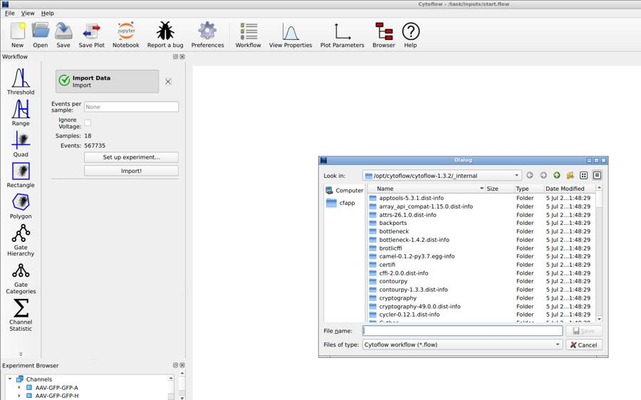
cd /task; cu click 1038 744; cu paste "/task/outputs/workflow.flow"; sleep 0.5; cu key Return; sleep 3; cu screenshot /tmp/screen.png; ls -la outputs; grep -n -i -A40 "channels" outputs/workflow.flow | head -80
{
"file_path": "/tmp/screen.png"
}/tmp/screen.png total 20 drwxrwsrwx 2 agent task 4096 Nov 10 19:14 . drwxr-xr-x 4 root root 4096 Nov 5 22:08 .. -rw-rw-r-- 1 cfapp task 10086 Nov 10 19:14 workflow.flow 2: channels: 3- - AAV-GFP-GFP-A 4- - AAV-GFP-GFP-H 5- - AAV-GFP-GFP-W 6- - FSC-A 7- - FSC-H 8- - FSC-W 9- - LiveDead-Zombie NIR-A 10- - LiveDead-Zombie NIR-H 11- - LiveDead-Zombie NIR-W 12- - SSC-A 13- - SSC-H 14- - SSC-W 15- - Time 16- conditions: 17- cell_line: !pandas-series;3 18- data: 19- - E1 20- - E3 21- - WT 22- dtype: object 23- index: !pandas-index;1 24- dtype: int64 25- name: null 26- values: 27- - 1 28- - 2 29- - 0 30- sample: !pandas-series;3 31- data: 32- - E1 caspase only (1:100) 33- - E1 no stain 34- - E1 zombie only 35- - E1-1 caspase @ 1:100 36- - E1-2 caspase @1:50 37- - E1-3 caspase @ 1:50 38- - E3 caspase only (1:100) 39- - E3 no stain 40- - E3 zombie only 41- - E3-1 @ 1:100 42- - E3-2 caspase @ 1:50 -- 243: channels_list: [] 244- conditions: 245- cell_line: category 246- sample: category 247- well: category 248- events: null 249- ignore_v_bool: false 250- name_metadata: null 251- tubes: 252- - !tube;1 253- conditions: 254- cell_line: WT 255- sample: WT no stain 256- well: A1 257- file: /task/inputs/raw/Caspase_h4_mlk(4)_caspase_Group_A1_WT_no stain.fcs 258- - !tube;1 259- conditions: 260- cell_line: WT 261- sample: WT caspase only (1:100) 262- well: A2 263- file: /task/inputs/raw/Caspase_h4_mlk(4)_caspase_Group_A2_Wt_caspase_1-100.fcs 264- - !tube;1 265- conditions: 266- cell_line: WT 267- sample: WT zombie only 268- well: A3 269- file: /task/inputs/raw/Caspase_h4_mlk(4)_caspase_Group_A3_Wt_zombie.fcs 270- - !tube;1 271- conditions: 272- cell_line: WT 273- sample: WT-1 caspase @ 1:100 274- well: A4 275- file: /task/inputs/raw/Caspase_h4_mlk(4)_caspase_Group_A4_Wt-1_1-100.fcs 276- - !tube;1 277- conditions: 278- cell_line: WT 279- sample: WT-2 caspase @ 1:50 280- well: A5

cd /task; sed -n 60,242p outputs/workflow.flow
- 11
- 13
- 12
- 14
- 15
- 16
- 17
- 1
- 0
- 2
- 3
- 4
- 5
well: !pandas-series;3
data:
- A1
- A10
- A11
- A12
- A2
- A3
- A4
- A5
- A6
- A7
- A8
- A9
- B1
- B2
- B3
- B4
- B5
- B6
dtype: object
index: !pandas-index;1
dtype: int64
name: null
values:
- 0
- 9
- 10
- 11
- 1
- 2
- 3
- 4
- 5
- 6
- 7
- 8
- 12
- 13
- 14
- 15
- 16
- 17
current_view: null
metadata:
AAV-GFP-GFP-A:
fcs_name: AAV-GFP-GFP-A
range: 1048576.0
type: channel
voltage: '250'
AAV-GFP-GFP-H:
fcs_name: AAV-GFP-GFP-H
range: 1048576.0
type: channel
voltage: '250'
AAV-GFP-GFP-W:
fcs_name: AAV-GFP-GFP-W
range: 1024.0
type: channel
voltage: '250'
FSC-A:
fcs_name: FSC-A
range: 1048576.0
type: channel
voltage: '20'
FSC-H:
fcs_name: FSC-H
range: 1048576.0
type: channel
voltage: '20'
FSC-W:
fcs_name: FSC-W
range: 1024.0
type: channel
voltage: '20'
LiveDead-Zombie NIR-A:
fcs_name: LiveDead-Zombie NIR-A
range: 1048576.0
type: channel
voltage: '350'
LiveDead-Zombie NIR-H:
fcs_name: LiveDead-Zombie NIR-H
range: 1048576.0
type: channel
voltage: '350'
LiveDead-Zombie NIR-W:
fcs_name: LiveDead-Zombie NIR-W
range: 1024.0
type: channel
voltage: '350'
SSC-A:
fcs_name: SSC-A
range: 1048576.0
type: channel
voltage: '290'
SSC-H:
fcs_name: SSC-H
range: 1048576.0
type: channel
voltage: '290'
SSC-W:
fcs_name: SSC-W
range: 1024.0
type: channel
voltage: '290'
Time:
fcs_name: Time
range: 67108864.0
type: channel
voltage: NA
cell_line:
dtype: category
experiment: true
type: condition
values:
- E1
- E3
- WT
values_type: categorical
ignore_v: []
name_metadata: $PnS
sample:
dtype: category
experiment: true
type: condition
values:
- E1 caspase only (1:100)
- E1 no stain
- E1 zombie only
- E1-1 caspase @ 1:100
- E1-2 caspase @1:50
- E1-3 caspase @ 1:50
- E3 caspase only (1:100)
- E3 no stain
- E3 zombie only
- E3-1 @ 1:100
- E3-2 caspase @ 1:50
- E3-3 caspase @ 1:50
- WT caspase only (1:100)
- WT no stain
- WT zombie only
- WT-1 caspase @ 1:100
- WT-2 caspase @ 1:50
- WT-3 caspase @ 1:50
values_type: categorical
well:
dtype: category
experiment: true
type: condition
values:
- A1
- A2
- A3
- A4
- A5
- A6
- A7
- A8
- A9
- A10
- A11
- A12
- B1
- B2
- B3
- B4
- B5
- B6
values_type: categorical
operation: !import;4cd /task; cu click 652 75; sleep 2; cu screenshot /tmp/screen.png
{
"file_path": "/tmp/screen.png"
}/tmp/screen.png

cd /task; cat $(which cu) | head -60; which xdotool wmctrl xwininfo; echo $DISPLAY
#!/bin/bash
# Computer-use helper: the agent's only way to act on the screen.
# cu screenshot [path] -> PNG of the screen (default /tmp/screen.png); prints path
# cu click X Y [left|right|double]
# cu move X Y | cu drag X1 Y1 X2 Y2 | cu scroll X Y up|down [N]
# cu type "text" (keystrokes) | cu paste "text" (clipboard) | cu key KEYS (e.g. ctrl+s, Return)
# cu cursor -> current mouse position
export DISPLAY=${DISPLAY:-:1}
cmd=$1; shift
case "$cmd" in
screenshot) out=${1:-/tmp/screen.png}; scrot -o "$out" && echo "$out" ;;
click) xdotool mousemove "$1" "$2"; case "${3:-left}" in
left) xdotool click 1;; right) xdotool click 3;; double) xdotool click --repeat 2 1;; esac ;;
move) xdotool mousemove "$1" "$2" ;;
drag) xdotool mousemove "$1" "$2" mousedown 1 mousemove --sync "$3" "$4" mouseup 1 ;;
scroll) xdotool mousemove "$1" "$2"; b=$([ "$3" = up ] && echo 4 || echo 5); xdotool click --repeat "${4:-3}" $b ;;
type) xdotool type --delay 50 -- "$1" ;;
# paste: put text on the clipboard (detached owner process so it survives this command) then ctrl+v
# paste: own the clipboard (no -loops: Qt asks for TARGETS first, then the text), press ctrl+v,
# give Qt a moment to fetch it, then release. Robust both locally and on Modal.
paste) printf '%s' "$1" | xclip -quiet -selection clipboard -i >/dev/null 2>&1 & cp=$!
sleep 0.3; xdotool key ctrl+v; sleep 1; kill $cp 2>/dev/null; true ;;
key) xdotool key -- "$1" ;;
cursor) xdotool getmouselocation ;;
*) sed -n '2,9p' "$0"; exit 1 ;;
esac
/usr/bin/xdotool
/usr/bin/xwininfo
:1export DISPLAY=:1; xdotool search --name "Cytoflow" | while read w; do xdotool getwindowname $w; xdotool getwindowgeometry $w; done; xdpyinfo 2>/dev/null | grep dimensions
Qt Selection Owner for cytoflow Window 14680068 Position: 0,0 (screen: 0) Geometry: 3x3 cytoflow Window 14680072 Position: 0,0 (screen: 0) Geometry: 1x1 Cytoflow - /task/outputs/workflow.flow Window 14680070 Position: 2,40 (screen: 0) Geometry: 2082x1171 dimensions: 1440x900 pixels (366x229 millimeters)
export DISPLAY=:1; xdotool windowmove 14680070 0 0; xdotool windowsize 14680070 1440 880; sleep 2; xdotool getwindowgeometry 14680070; cu screenshot /tmp/screen.png
{
"file_path": "/tmp/screen.png"
}Window 14680070 Position: 1,20 (screen: 0) Geometry: 1440x880 /tmp/screen.png
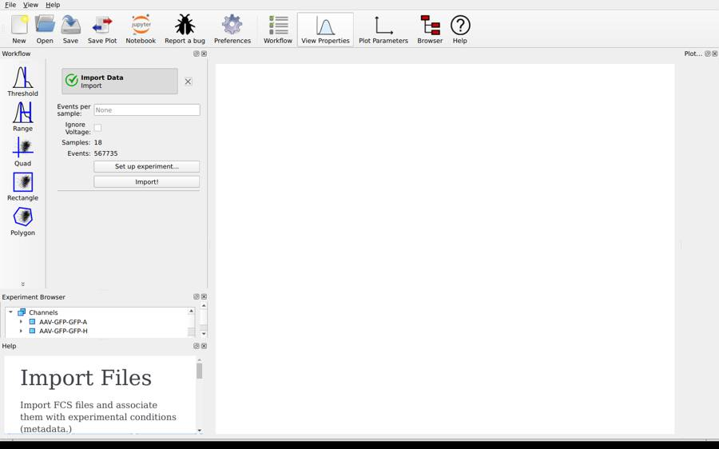
cd /task; cu click 408 693; sleep 1; cu click 408 594; sleep 1; cu drag 1363 490 1050 490; sleep 2; cu screenshot /tmp/screen.png
{
"file_path": "/tmp/screen.png"
}/tmp/screen.png
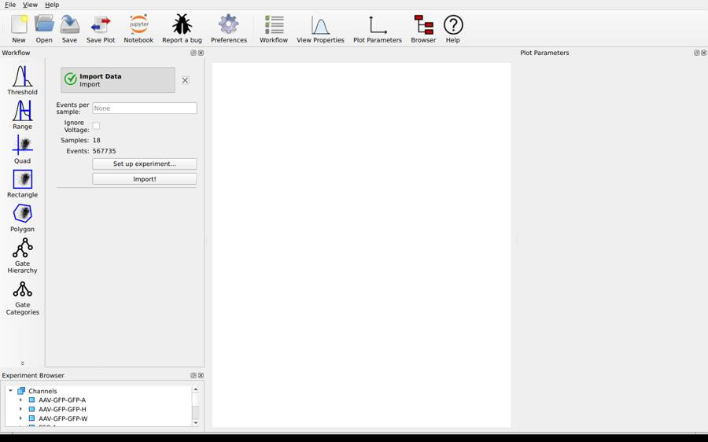
cd /task; cu click 408 764; sleep 1; cu click 651 60; sleep 2; cu screenshot /tmp/screen.png
{
"file_path": "/tmp/screen.png"
}/tmp/screen.png
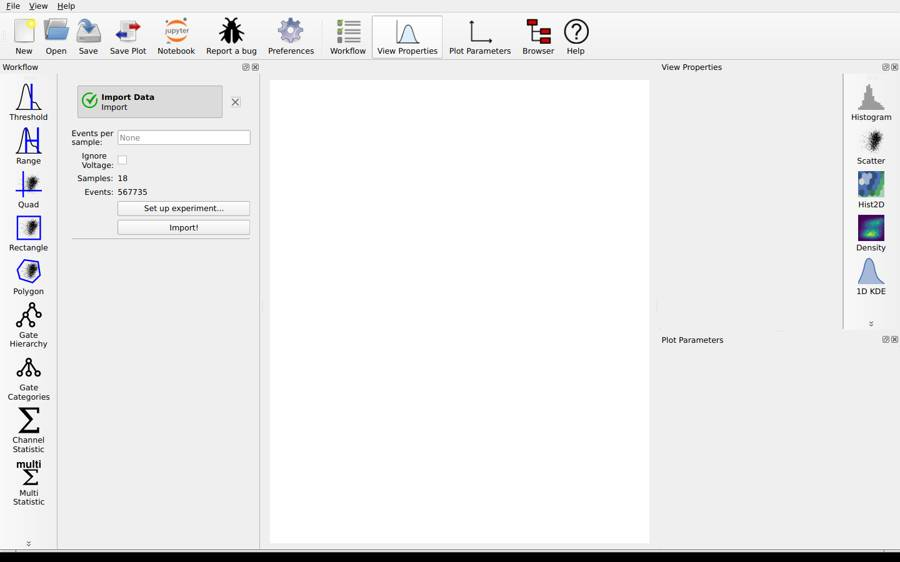
cd /task; cu click 1431 544; sleep 1; cu click 1393 370; sleep 2; cu screenshot /tmp/screen.png
{
"file_path": "/tmp/screen.png"
}/tmp/screen.png
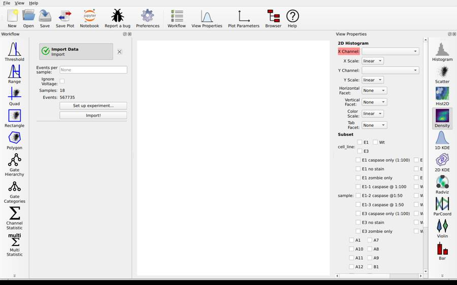
cd /task; cu click 1229 162; sleep 1; cu screenshot /tmp/screen.png
{
"file_path": "/tmp/screen.png"
}/tmp/screen.png
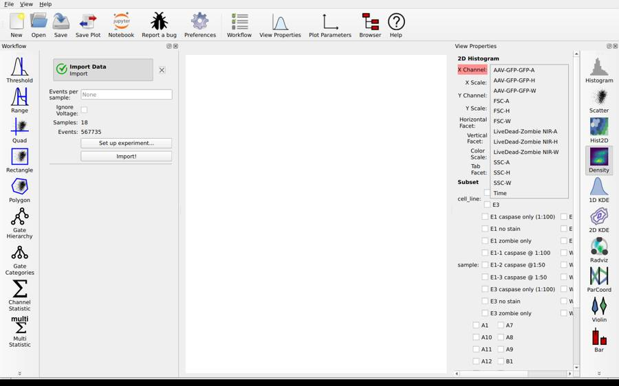
cd /task; cu click 1166 235; sleep 1; cu click 1229 222; sleep 1; cu screenshot /tmp/screen.png
{
"file_path": "/tmp/screen.png"
}/tmp/screen.png
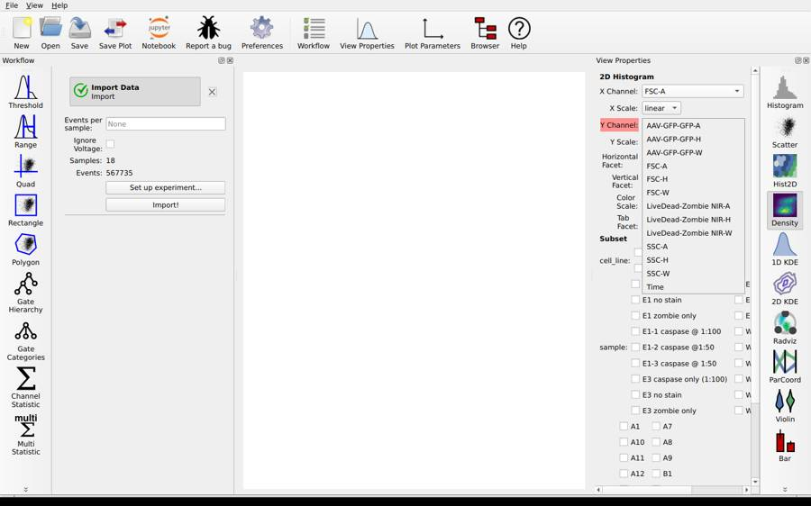
cd /task; cu click 1166 438; sleep 6; cu screenshot /tmp/screen.png
{
"file_path": "/tmp/screen.png"
}/tmp/screen.png
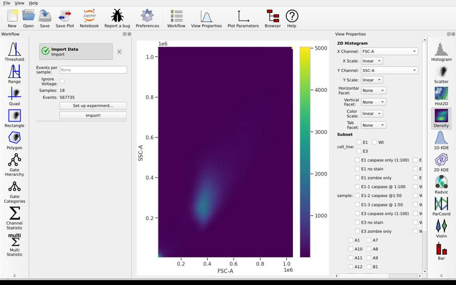
cd /task; cu click 1175 359; sleep 1; cu screenshot /tmp/screen.png
{
"file_path": "/tmp/screen.png"
}/tmp/screen.png
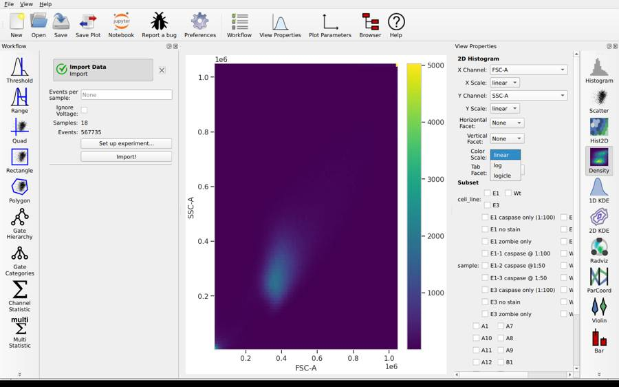
cd /task; cu click 1158 384; sleep 6; cu screenshot /tmp/screen.png
{
"file_path": "/tmp/screen.png"
}/tmp/screen.png
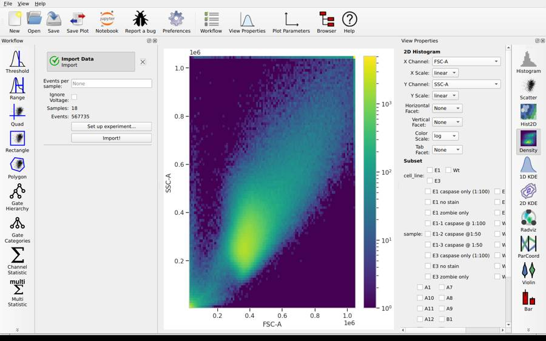
cd /task; cu click 45 440; sleep 2; cu screenshot /tmp/screen.png
{
"file_path": "/tmp/screen.png"
}/tmp/screen.png
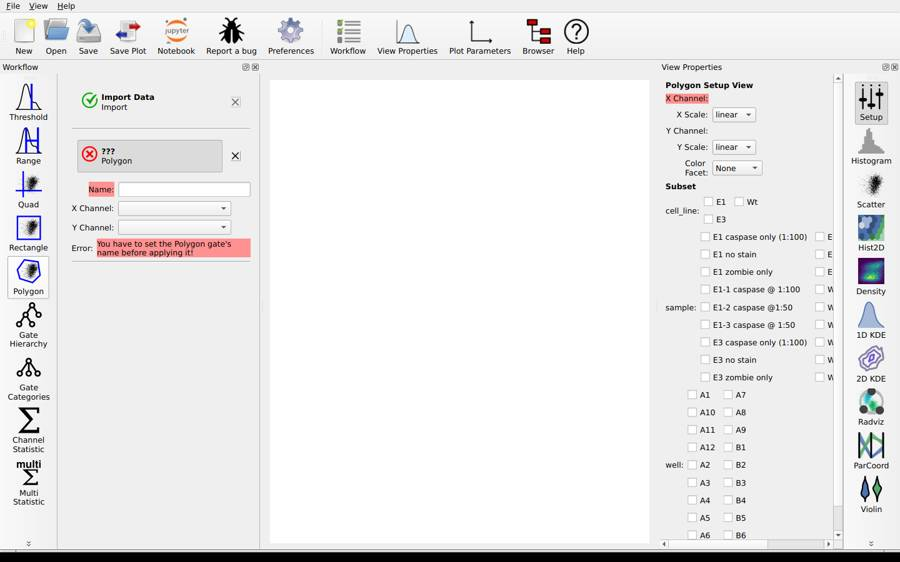
cd /task; cu click 295 303; cu type "cells"; cu key Tab; sleep 1; cu click 279 334; sleep 1; cu screenshot /tmp/screen.png
{
"file_path": "/tmp/screen.png"
}/tmp/screen.png
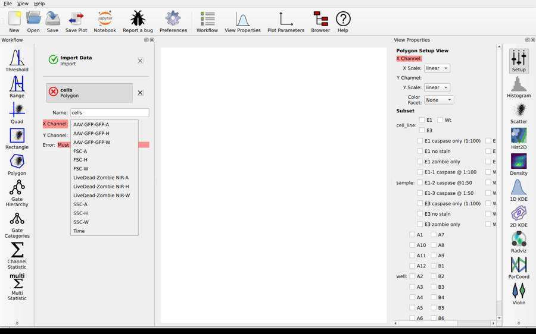
cd /task; cu click 215 407; sleep 1; cu click 279 364; sleep 1; cu click 215 580; sleep 8; cu screenshot /tmp/screen.png
{
"file_path": "/tmp/screen.png"
}/tmp/screen.png
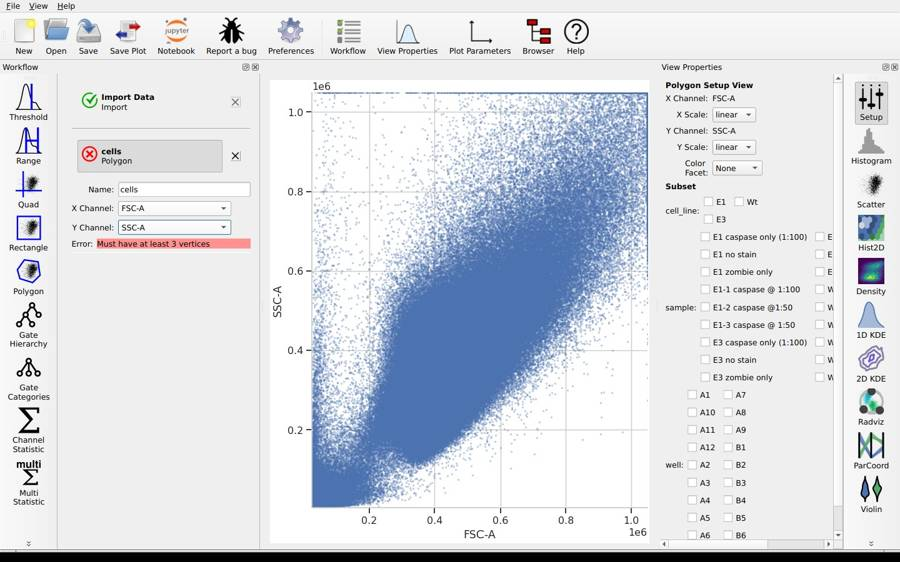
cd /task; for p in "601 778" "685 778" "800 702" "931 562" "994 434" "994 199" "853 199" "696 358" "612 511"; do cu click $p; sleep 0.7; done; cu click 586 676 double; sleep 10; cu screenshot /tmp/screen.png
{
"file_path": "/tmp/screen.png"
}/tmp/screen.png
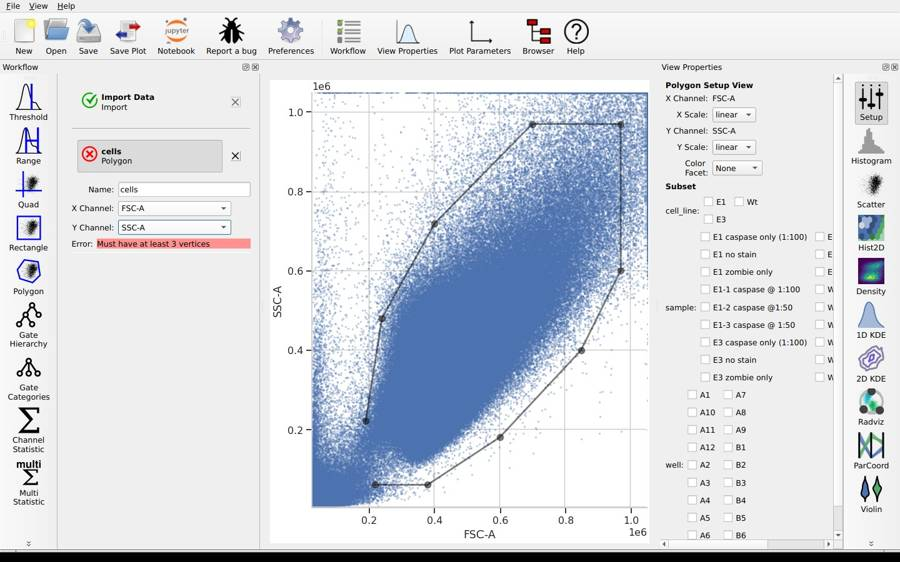
cd /task; cu click 601 778; sleep 10; cu screenshot /tmp/screen.png
{
"file_path": "/tmp/screen.png"
}/tmp/screen.png
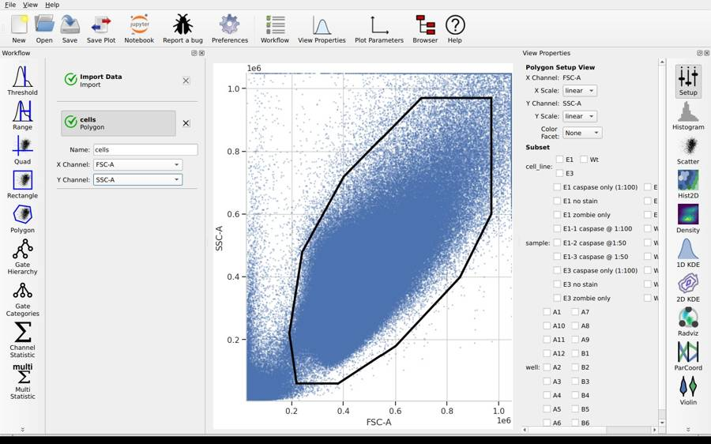
cd /task; cu key ctrl+s; sleep 2; cu click 45 440; sleep 2; cu screenshot /tmp/screen.png
{
"file_path": "/tmp/screen.png"
}/tmp/screen.png
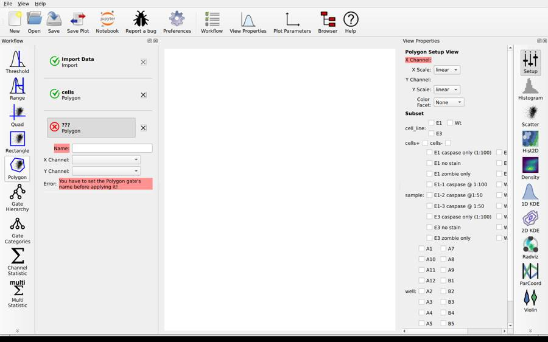
cd /task; cu click 295 390; cu type "singlets"; cu key Tab; sleep 1; cu click 279 420; sleep 1; cu click 215 493; sleep 1; cu click 279 450; sleep 1; cu click 215 547; sleep 5; cu click 1117 376; sleep 8; cu screenshot /tmp/screen.png
{
"file_path": "/tmp/screen.png"
}/tmp/screen.png
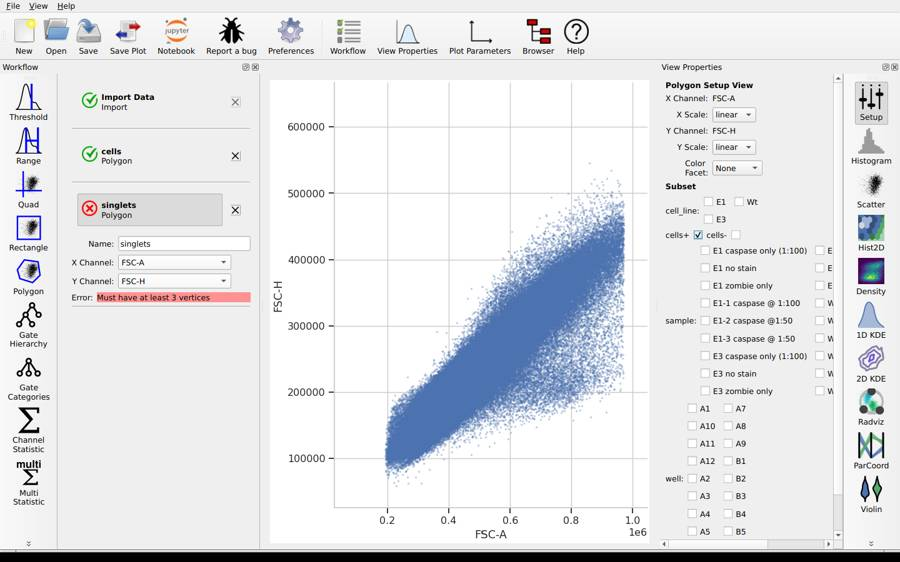
cd /task; cu click 1393 440; sleep 2; cu screenshot /tmp/screen.png
{
"file_path": "/tmp/screen.png"
}/tmp/screen.png
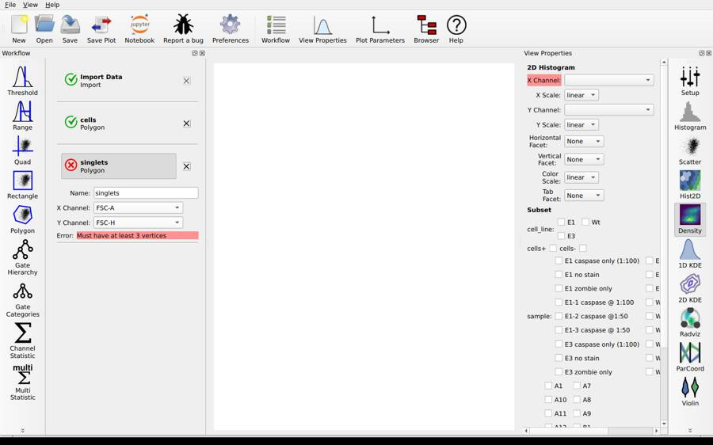
cd /task; cu click 1229 162; sleep 1; cu click 1166 235; sleep 1; cu click 1229 222; sleep 1; cu click 1166 319; sleep 1; cu click 1175 359; sleep 1; cu click 1158 384; sleep 1; cu click 1117 502; sleep 8; cu screenshot /tmp/screen.png
{
"file_path": "/tmp/screen.png"
}/tmp/screen.png
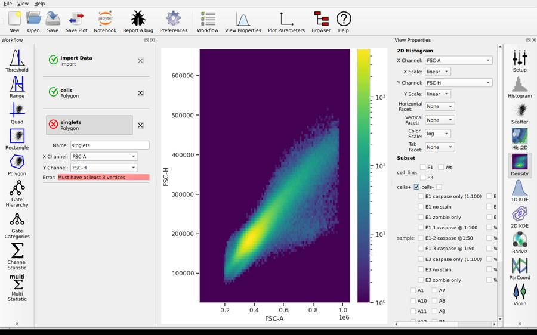
cd /task; cu click 1393 160; sleep 10; cu screenshot /tmp/screen.png
{
"file_path": "/tmp/screen.png"
}/tmp/screen.png
cd /task; for p in "605 774" "1002 420" "1002 182" "605 654" "605 774"; do cu click $p; sleep 0.8; done; sleep 10; cu screenshot /tmp/screen.png
{
"file_path": "/tmp/screen.png"
}/tmp/screen.png
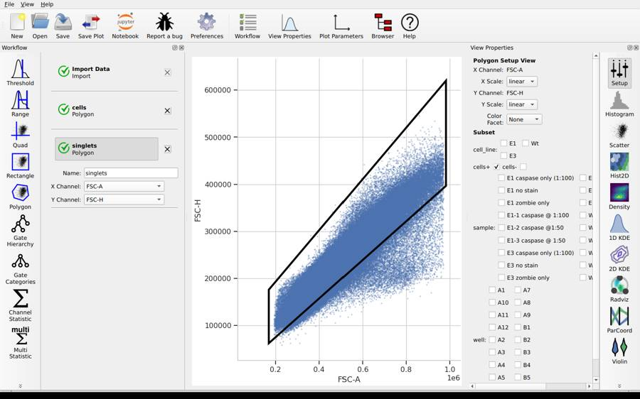
cd /task; cu key ctrl+s; sleep 2; cu click 45 230; sleep 2; cu screenshot /tmp/screen.png
{
"file_path": "/tmp/screen.png"
}/tmp/screen.png
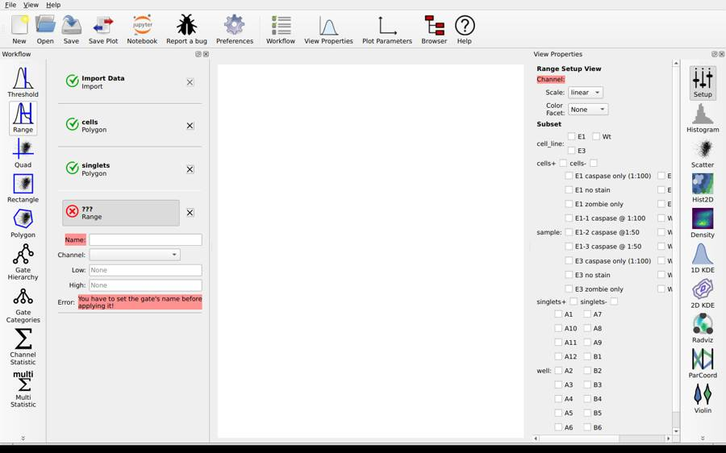
cd /task; cu click 288 476; cu type "live"; cu key Tab; sleep 1; cu click 267 506; sleep 1; cu screenshot /tmp/s1.png; cu click 270 651; sleep 4; cu click 1160 184; sleep 1; cu click 1160 233; sleep 3; cu click 1117 324; sleep 2; cu click 1137 599; sleep 8; cu screenshot /tmp/screen.png
{
"file_path": "/tmp/screen.png"
}/tmp/s1.png /tmp/screen.png
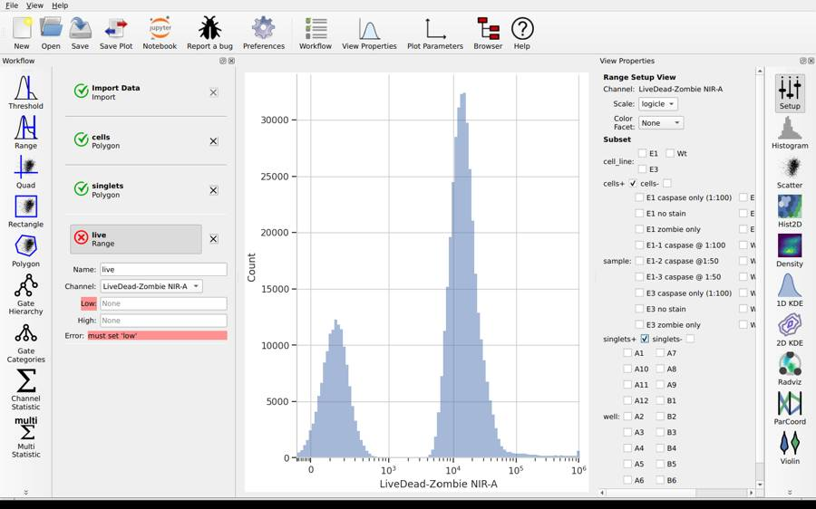
cd /task; python3 -c "
from PIL import Image
im=Image.open('/tmp/screen.png').crop((500,640,1040,830)); im=im.resize((im.width*2,im.height*3)); im.save('/tmp/crop.png')"(Bash completed with no output)
{
"file_path": "/tmp/crop.png"
}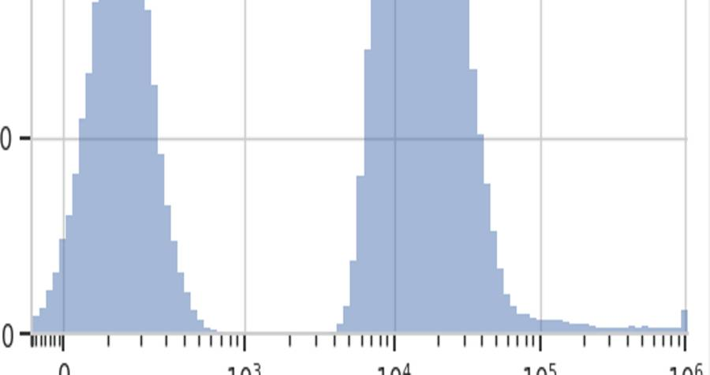
cd /task; cu click 288 537; cu type "-1000000"; cu key Tab; sleep 1; cu click 288 567; cu type "70000"; cu key Tab; sleep 10; cu screenshot /tmp/screen.png
{
"file_path": "/tmp/screen.png"
}/tmp/screen.png
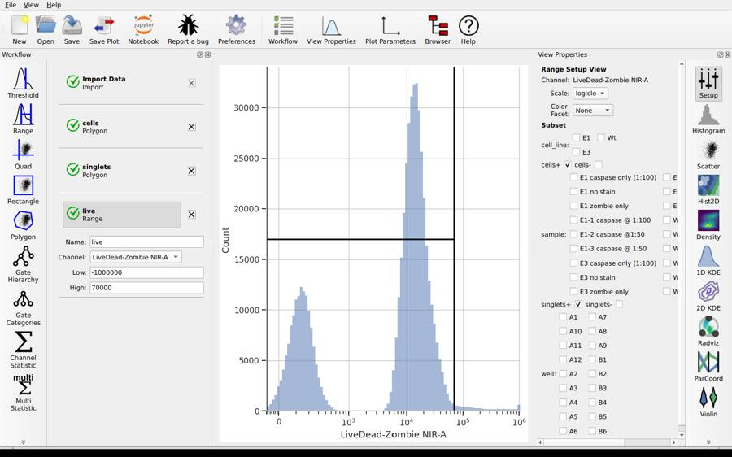
cd /task; cu key ctrl+s; sleep 2; cu click 45 160; sleep 2; cu screenshot /tmp/screen.png
{
"file_path": "/tmp/screen.png"
}/tmp/screen.png
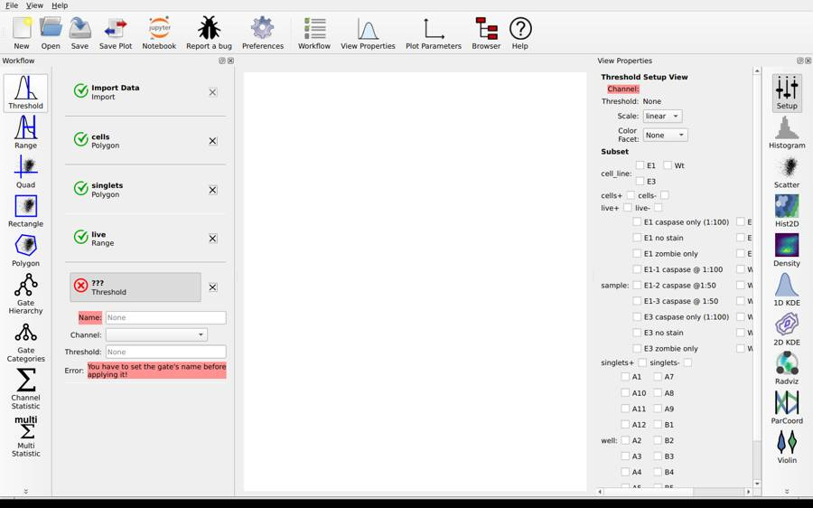
cd /task; cu click 293 563; cu type "casp3_pos"; cu key Tab; sleep 1; cu click 277 593; sleep 1; cu click 250 595; sleep 4; cu click 1172 206; sleep 1; cu click 1172 255; sleep 3; cu click 1117 346; sleep 2; cu click 1111 368; sleep 2; cu click 1137 642; sleep 8; cu screenshot /tmp/screen.png
{
"file_path": "/tmp/screen.png"
}/tmp/screen.png
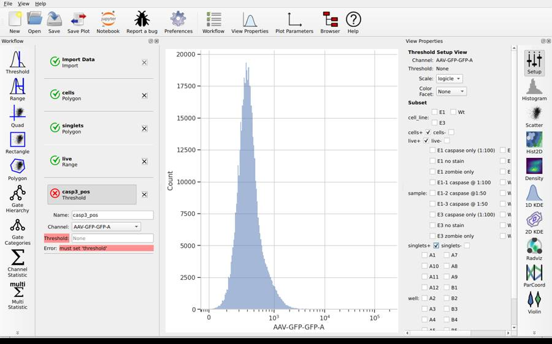
cd /task; cu click 1393 230; sleep 2; cu screenshot /tmp/screen.png
{
"file_path": "/tmp/screen.png"
}/tmp/screen.png
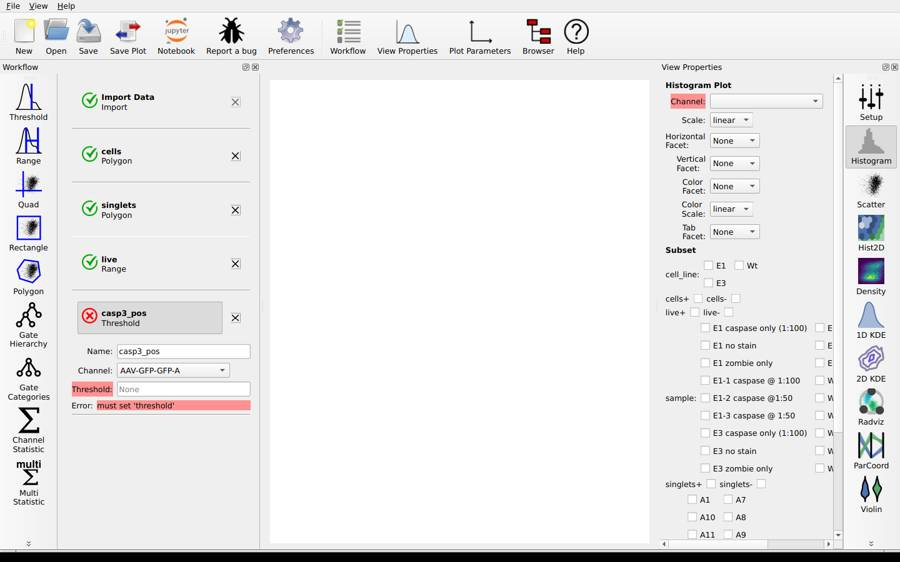
cd /task; cu click 1225 162; sleep 1; cu click 1200 164; sleep 2; cu click 1170 192; sleep 1; cu click 1170 241; sleep 2; cu click 1175 226; sleep 1; cu screenshot /tmp/screen.png
{
"file_path": "/tmp/screen.png"
}/tmp/screen.png
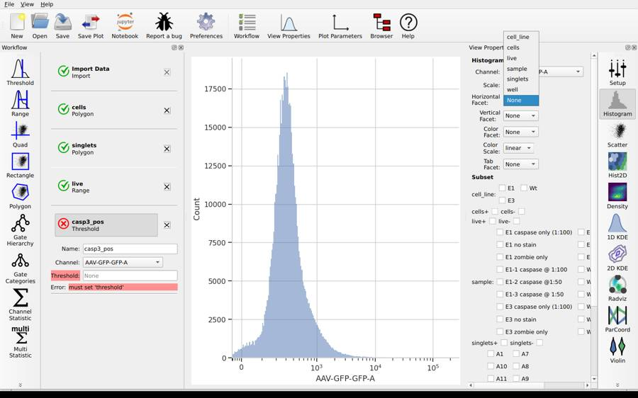
cd /task; cu click 1168 83; sleep 2; cu click 1175 298; sleep 1; cu click 1166 226; sleep 2; cu click 1117 478; sleep 1; cu click 1111 500; sleep 1; cu click 1137 775; sleep 10; cu screenshot /tmp/screen.png
{
"file_path": "/tmp/screen.png"
}/tmp/screen.png
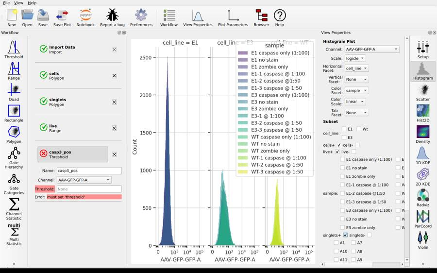
cd /task; cu click 1175 226; sleep 1; cu screenshot /tmp/screen.png
{
"file_path": "/tmp/screen.png"
}/tmp/screen.png
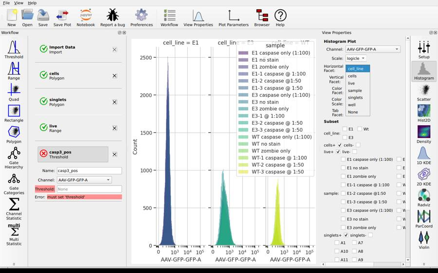
cd /task; cu click 1160 369; sleep 3; cu click 1175 262; sleep 1; cu click 1160 238; sleep 3; cu click 1175 298; sleep 1; cu click 1160 370; sleep 3; cu click 1182 425; sleep 10; cu screenshot /tmp/screen.png
{
"file_path": "/tmp/screen.png"
}/tmp/screen.png
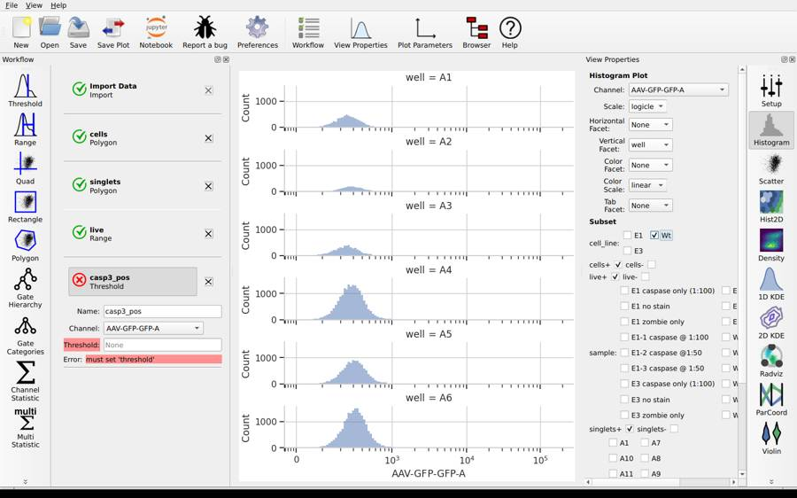
cd /task; cu click 1182 425; sleep 1; cu click 1133 425; sleep 10; cu screenshot /tmp/e1.png; cu click 1133 425; sleep 1; cu click 1133 453; sleep 10; cu screenshot /tmp/e3.png
{
"file_path": "/tmp/e1.png"
}{
"file_path": "/tmp/e3.png"
}/tmp/e1.png /tmp/e3.png
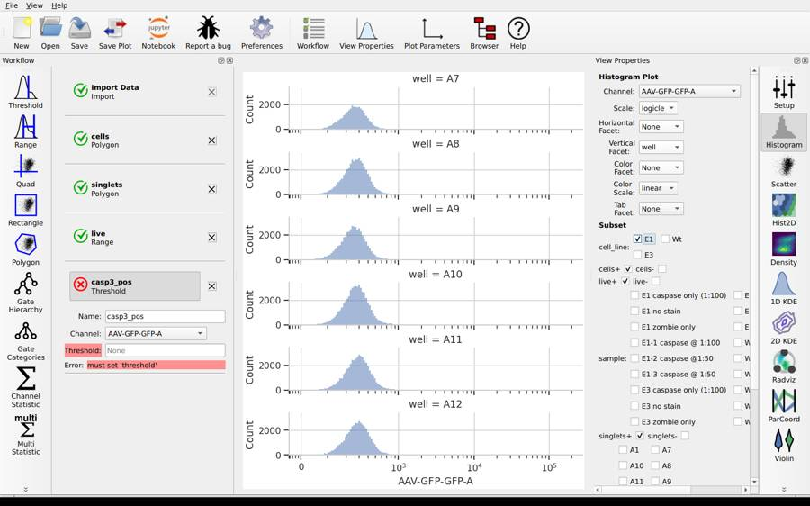
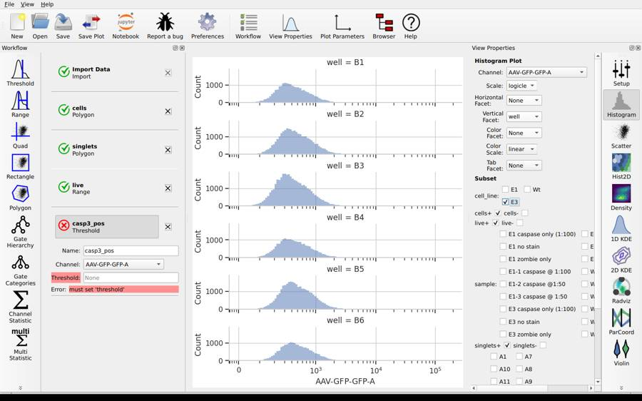
cd /task; cu click 1393 160; sleep 3; cu click 293 623; cu type "2000"; cu key Tab; sleep 10; cu key ctrl+s; sleep 2; cu screenshot /tmp/screen.png
{
"file_path": "/tmp/screen.png"
}/tmp/screen.png
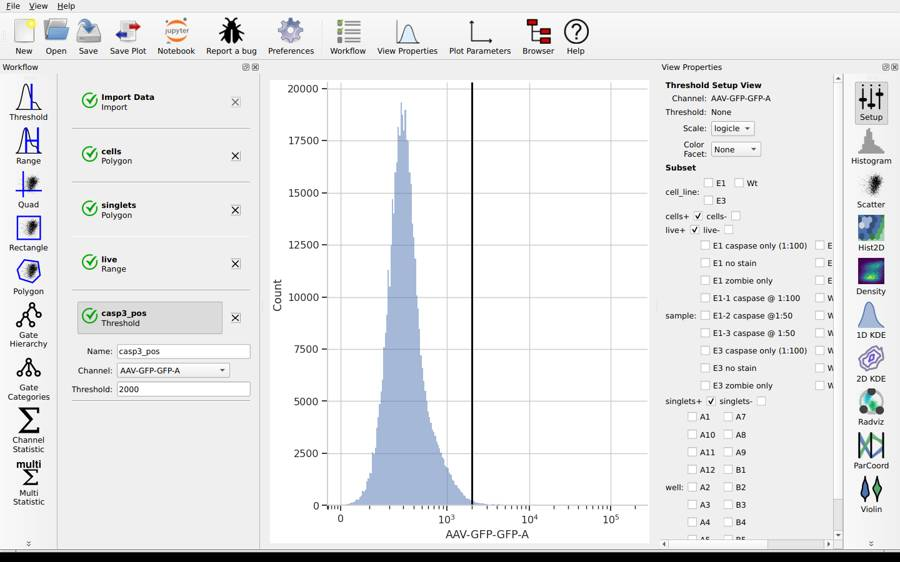
cd /task; cu click 45 690; sleep 3; cu screenshot /tmp/screen.png
{
"file_path": "/tmp/screen.png"
}/tmp/screen.png
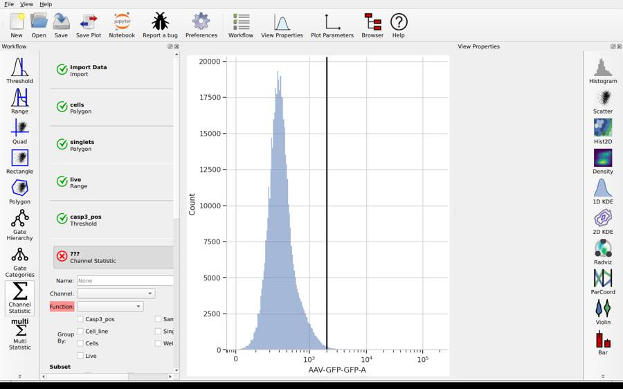
thinking
All four gates are now in the workflow, and I'm widening the pane so I can set up the Channel Statistic count export for per-well counts.
cd /task; cu drag 420 490 640 490; sleep 3; cu screenshot /tmp/screen.png
{
"file_path": "/tmp/screen.png"
}/tmp/screen.png
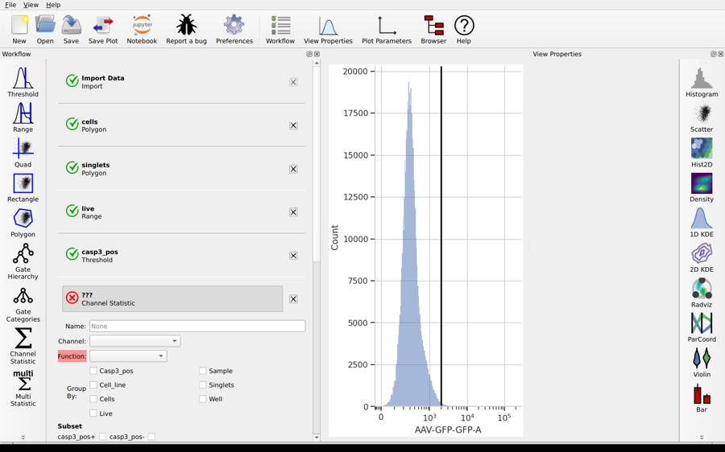
cd /task; cu click 390 649; cu type "n_scatter"; cu key Tab; sleep 1; cu click 267 679; sleep 1; cu click 215 752; sleep 2; cu click 255 709; sleep 1; cu screenshot /tmp/screen.png
{
"file_path": "/tmp/screen.png"
}/tmp/screen.png
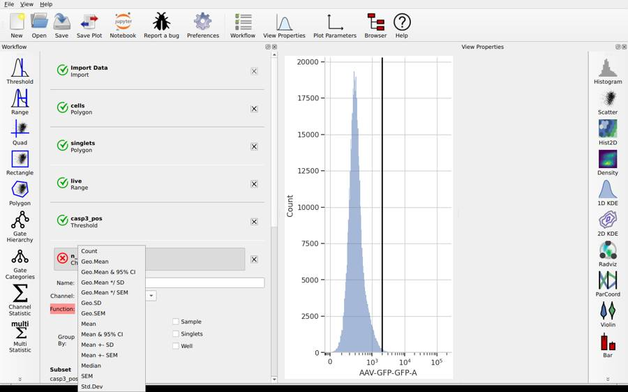
cd /task; cu click 205 577; sleep 2; cu click 185 794; sleep 1; cu click 403 766; sleep 1; cu click 403 794; sleep 5; cu screenshot /tmp/screen.png
{
"file_path": "/tmp/screen.png"
}/tmp/screen.png
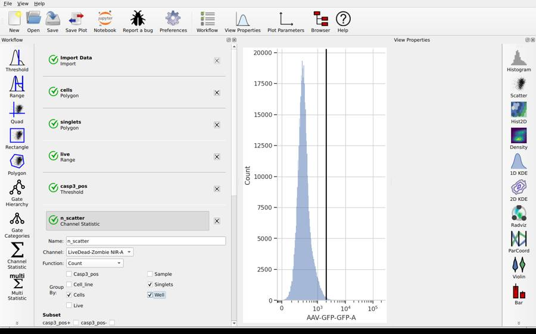
cd /task; cu click 1393 870; sleep 1; cu screenshot /tmp/screen.png
{
"file_path": "/tmp/screen.png"
}/tmp/screen.png
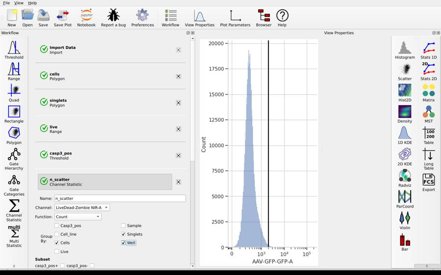
cd /task; cu click 1399 520; sleep 3; cu screenshot /tmp/screen.png
{
"file_path": "/tmp/screen.png"
}/tmp/screen.png
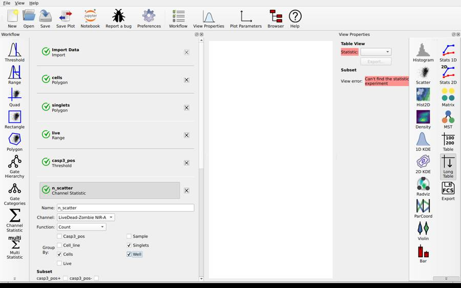
cd /task; cu click 185 738; sleep 1; cu click 185 823; sleep 4; cu click 1173 162; sleep 1; cu screenshot /tmp/screen.png
{
"file_path": "/tmp/screen.png"
}/tmp/screen.png
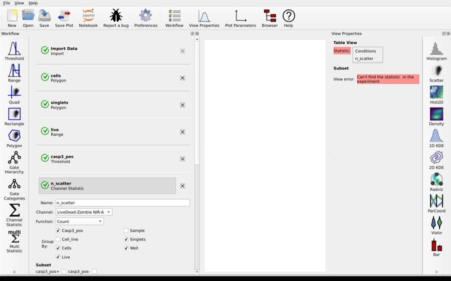
cd /task; cu click 1163 188; sleep 5; cu screenshot /tmp/screen.png
{
"file_path": "/tmp/screen.png"
}/tmp/screen.png
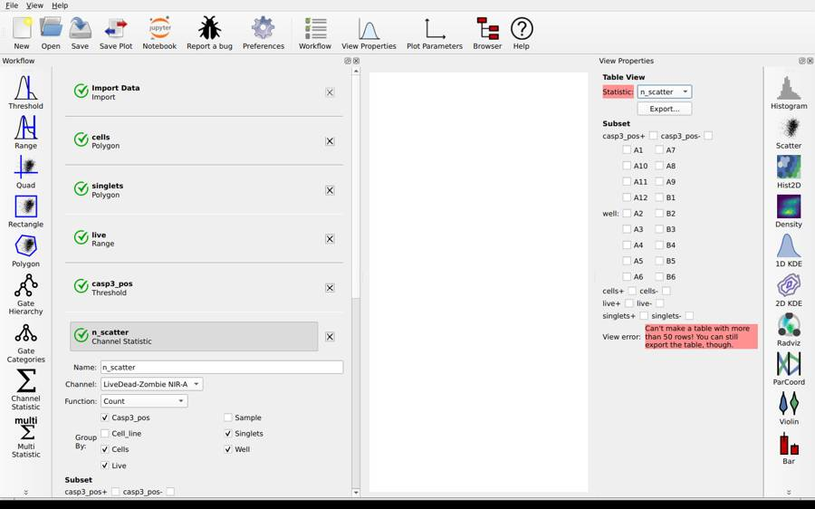
cd /task; cu click 1173 192; sleep 2; cu screenshot /tmp/screen.png
{
"file_path": "/tmp/screen.png"
}/tmp/screen.png
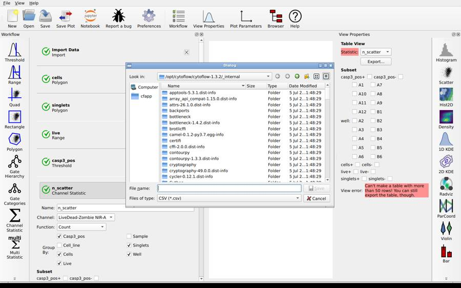
cd /task; mkdir -p /task/outputs/cytoflow_exports; chmod 777 /task/outputs/cytoflow_exports; cu click 715 588; cu paste "/task/outputs/cytoflow_exports/counts_long_v1.csv"; sleep 0.5; cu key Return; sleep 3; cu screenshot /tmp/screen.png; ls -la outputs/cytoflow_exports; head -40 outputs/cytoflow_exports/counts_long_v1.csv; wc -l outputs/cytoflow_exports/*
/tmp/screen.png total 12 drwxrwsrwx 2 root task 4096 Nov 10 19:26 . drwxrwsrwx 3 agent task 4096 Nov 10 19:26 .. -rw-rw-r-- 1 cfapp task 3700 Nov 10 19:26 counts_long_v1.csv cells,singlets,well,casp3_pos,live,LiveDead-Zombie NIR-A 0,0,A1,0,1,580.0 0,0,A10,0,0,388.0 0,0,A10,0,1,1539.0 0,0,A10,1,0,9.0 0,0,A10,1,1,5.0 0,0,A11,0,0,363.0 0,0,A11,0,1,1609.0 0,0,A11,1,0,5.0 0,0,A11,1,1,10.0 0,0,A12,0,0,537.0 0,0,A12,0,1,1809.0 0,0,A12,1,0,5.0 0,0,A12,1,1,10.0 0,0,A2,0,1,589.0 0,0,A2,1,1,1.0 0,0,A3,0,0,28.0 0,0,A3,0,1,530.0 0,0,A3,1,0,2.0 0,0,A4,0,0,81.0 0,0,A4,0,1,932.0 0,0,A4,1,0,3.0 0,0,A4,1,1,8.0 0,0,A5,0,0,21.0 0,0,A5,0,1,487.0 0,0,A5,1,0,1.0 0,0,A5,1,1,5.0 0,0,A6,0,0,105.0 0,0,A6,0,1,759.0 0,0,A6,1,0,4.0 0,0,A6,1,1,10.0 0,0,A7,0,1,1293.0 0,0,A7,1,1,4.0 0,0,A8,0,1,1570.0 0,0,A8,1,1,18.0 0,0,A9,0,0,348.0 0,0,A9,0,1,1376.0 0,0,A9,1,0,4.0 0,0,A9,1,1,6.0 0,0,B1,0,1,3106.0 218 outputs/cytoflow_exports/counts_long_v1.csv
mkdir -p /task/work; cat > /task/work/tab.py <<'EOF'
import pandas as pd, sys
f = sys.argv[1]
d = pd.read_csv(f)
vc = [c for c in d.columns if c not in ('cells','singlets','well','casp3_pos','live','dead','casp3_pos_all')][0]
d = d.rename(columns={vc:'n'})
for c in d.columns:
if c not in ('well','n'): d[c]=d[c].astype(str).isin(['1','True','1.0'])
lay = pd.read_csv('/task/inputs/plate_layout.csv')
rows=[]
for w in lay.well:
x=d[d.well==w]
al=x.n.sum(); c=x[x.cells].n.sum(); s=x[x.cells&x.singlets].n.sum(); l=x[x.cells&x.singlets&x.live].n.sum(); p=x[x.cells&x.singlets&x.live&x.casp3_pos].n.sum()
dead=s-l; pd_=x[x.cells&x.singlets&~x.live&x.casp3_pos].n.sum()
rows.append(dict(well=w,all=int(al),cells=int(c),singlets=int(s),live=int(l),pos=int(p),pct_cells=100*c/al,pct_sing=100*s/c,pct_live=100*l/s,pct_pos=100*p/l,dead=int(dead),pos_in_dead=int(pd_),pct_pos_dead=100*pd_/dead if dead else float('nan'),pct_pos_sing=100*(p+pd_)/s))
r=pd.DataFrame(rows).merge(lay[['well','sample']])
pd.set_option('display.width',250); pd.set_option('display.float_format',lambda v:'%.2f'%v)
print(r.to_string(index=False)); print(r['all'].sum())
EOF
python3 /task/work/tab.py /task/outputs/cytoflow_exports/counts_long_v1.csvwell all cells singlets live pos pct_cells pct_sing pct_live pct_pos dead pos_in_dead pct_pos_dead pct_pos_sing sample A1 6969 6361 6194 6194 3 91.28 97.37 100.00 0.05 0 0 NaN 0.05 WT no stain A2 3149 2527 2469 2469 18 80.25 97.70 100.00 0.73 0 0 NaN 0.73 WT caspase only (1:100) A3 5742 5146 5027 4967 0 89.62 97.69 98.81 0.00 60 0 0.00 0.00 WT zombie only A4 20776 19642 18969 18742 79 94.54 96.57 98.80 0.42 227 1 0.44 0.42 WT-1 caspase @ 1:100 A5 13119 12554 12173 12070 71 95.69 96.97 99.15 0.59 103 0 0.00 0.58 WT-2 caspase @ 1:50 A6 21946 20981 20341 20005 123 95.60 96.95 98.35 0.61 336 2 0.60 0.61 WT-3 caspase @ 1:50 A7 33911 32417 31543 31543 0 95.59 97.30 100.00 0.00 0 0 NaN 0.00 E1 no stain A8 52749 50853 49071 49071 77 96.41 96.50 100.00 0.16 0 0 NaN 0.16 E1 caspase only (1:100) A9 49297 47283 45681 44757 5 95.91 96.61 97.98 0.01 924 0 0.00 0.01 E1 zombie only A10 58936 56649 54528 53439 91 96.12 96.26 98.00 0.17 1089 3 0.28 0.17 E1-1 caspase @ 1:100 A11 51193 48902 47136 46202 94 95.52 96.39 98.02 0.20 934 3 0.32 0.21 E1-2 caspase @1:50 A12 51047 48303 46719 45522 137 94.62 96.72 97.44 0.30 1197 2 0.17 0.30 E1-3 caspase @ 1:50 B1 26935 22821 21757 21757 126 84.73 95.34 100.00 0.58 0 0 NaN 0.58 E3 no stain B2 36048 31062 29667 29667 582 86.17 95.51 100.00 1.96 0 0 NaN 1.96 E3 caspase only (1:100) B3 46022 39661 37748 37019 242 86.18 95.18 98.07 0.65 729 6 0.82 0.66 E3 zombie only B4 27503 23645 22549 21998 419 85.97 95.36 97.56 1.90 551 17 3.09 1.93 E3-1 @ 1:100 B5 37596 33110 31639 31006 520 88.07 95.56 98.00 1.68 633 19 3.00 1.70 E3-2 caspase @ 1:50 B6 24797 21729 20825 20320 340 87.63 95.84 97.58 1.67 505 14 2.77 1.70 E3-3 caspase @ 1:50 567735
cd /task; cu click 1393 160; sleep 2; cu click 1225 162; sleep 1; cu screenshot /tmp/screen.png
{
"file_path": "/tmp/screen.png"
}/tmp/screen.png
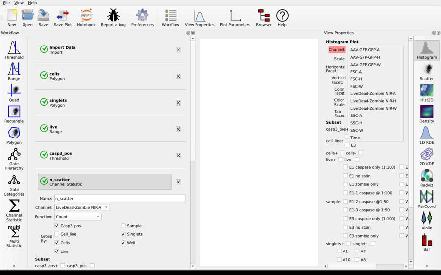
cd /task; cu click 1160 450; sleep 2; cu click 1175 262; sleep 1; cu click 1160 238; sleep 8; cu screenshot /tmp/screen.png
{
"file_path": "/tmp/screen.png"
}/tmp/screen.png
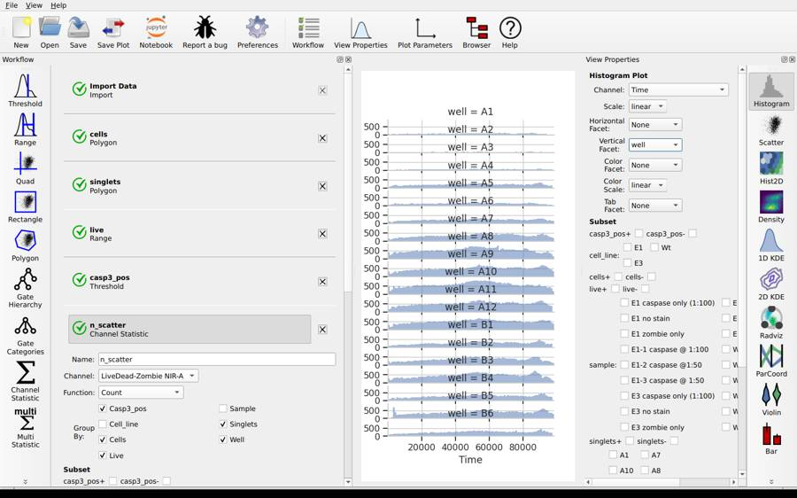
cd /task; cu drag 641 490 425 490; sleep 2; cu click 1182 447; sleep 10; cu screenshot /tmp/t_wt.png; cu click 1182 447; sleep 1; cu click 1133 447; sleep 10; cu screenshot /tmp/t_e1.png; cu click 1133 447; sleep 1; cu click 1133 475; sleep 10; cu screenshot /tmp/t_e3.png
{
"file_path": "/tmp/t_wt.png"
}{
"file_path": "/tmp/t_e1.png"
}{
"file_path": "/tmp/t_e3.png"
}/tmp/t_wt.png /tmp/t_e1.png /tmp/t_e3.png
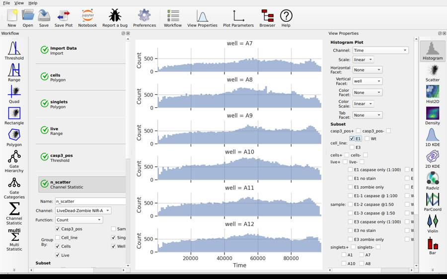
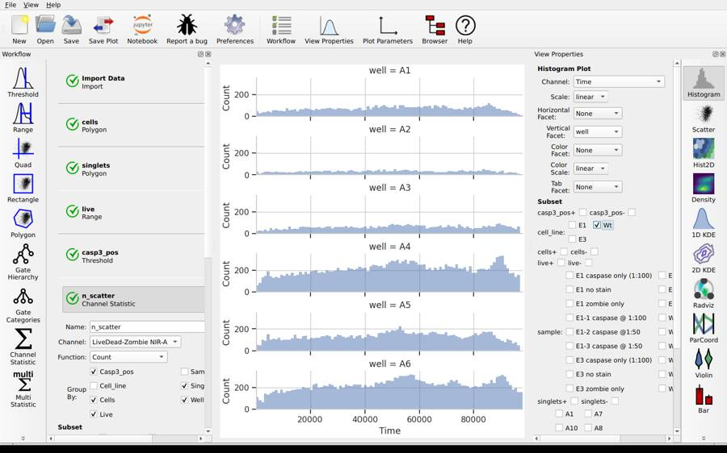
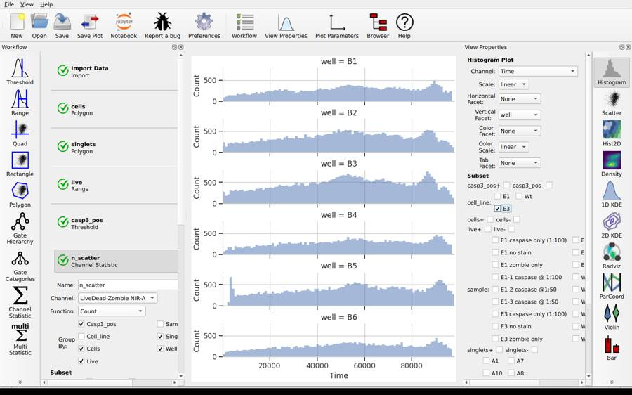
cd /task; cu click 1393 370; sleep 2; cu screenshot /tmp/screen.png
{
"file_path": "/tmp/screen.png"
}/tmp/screen.png
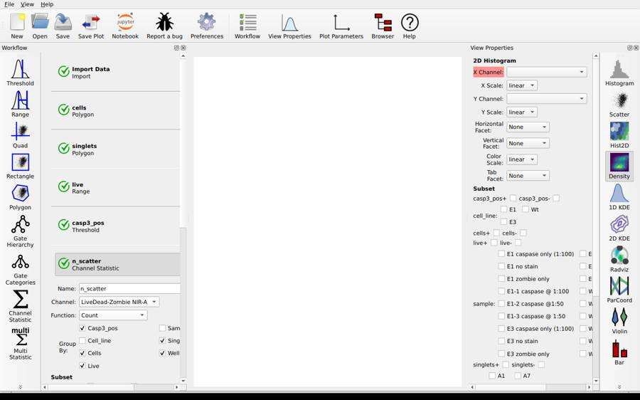
cd /task; cu click 1229 162; sleep 1; cu click 1190 164; sleep 1; cu click 1175 192; sleep 1; cu click 1170 241; sleep 1; cu click 1229 222; sleep 1; cu click 1220 367; sleep 1; cu click 1175 252; sleep 1; cu click 1170 301; sleep 1; cu click 1188 286; sleep 1; cu click 1168 142; sleep 1; cu click 1175 359; sleep 1; cu click 1158 384; sleep 1; cu click 1117 524; sleep 1; cu click 1137 820; sleep 12; cu screenshot /tmp/screen.png
{
"file_path": "/tmp/screen.png"
}/tmp/screen.png
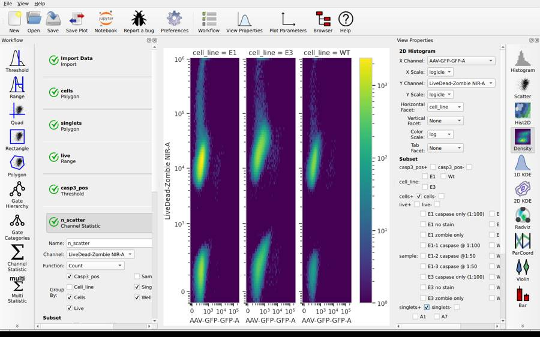
thinking
The BL1-vs-Zombie plot shows no clear caspase-positive cluster, only sparse bright events, and E3 is noticeably more autofluorescent. I'm zooming into each well's bright tail to place the positivity threshold.
cd /task; cu click 1393 160; sleep 3; cu click 1225 162; sleep 1; cu screenshot /tmp/s1.png;
{
"file_path": "/tmp/s1.png"
}/tmp/s1.png
cd /task; cu click 1190 14; sleep 2; cu click 1170 192; sleep 1; cu click 1170 241; sleep 2; cu click 1154 423; sleep 1; cu click 1117 500; sleep 1; cu click 1111 522; sleep 1; cu click 1137 797; sleep 10; cu screenshot /tmp/h_e3.png; cu click 1133 475; sleep 1; cu click 1133 447; sleep 10; cu screenshot /tmp/h_e1.png; cu click 1133 447; sleep 1; cu click 1182 447; sleep 10; cu screenshot /tmp/h_wt.png
{
"file_path": "/tmp/h_e3.png"
}/tmp/h_e3.png /tmp/h_e1.png /tmp/h_wt.png
{
"file_path": "/tmp/h_e1.png"
}{
"file_path": "/tmp/h_wt.png"
}cd /task; cu click 240 509; sleep 3; cu screenshot /tmp/screen.png
{
"file_path": "/tmp/screen.png"
}/tmp/screen.png
thinking
Stained wells show a small antibody-dependent tail absent from the FMO controls, but E3's autofluorescence reaches about 3–4k. I'm raising the primary caspase threshold to 3500 and adding a lower second gate as a sensitivity check.
cd /task; cu click 295 623; cu key ctrl+a; cu type "3500"; cu key Tab; sleep 8; cu click 45 160; sleep 3; cu screenshot /tmp/screen.png
{
"file_path": "/tmp/screen.png"
}/tmp/screen.png
cd /task; cu click 295 649; cu type "casp3_pos_lo"; cu key Tab; sleep 1; cu click 277 679; sleep 1; cu click 250 681; sleep 3; cu click 295 709; cu type "2000"; cu key Tab; sleep 8; cu screenshot /tmp/screen.png
{
"file_path": "/tmp/screen.png"
}/tmp/screen.png
cd /task; cu click 277 679; sleep 1; cu screenshot /tmp/s1.png
{
"file_path": "/tmp/s1.png"
}/tmp/s1.png
cd /task; cu click 243 600; sleep 8; cu key ctrl+s; sleep 2; cu click 240 772; sleep 3; cu screenshot /tmp/screen.png
{
"file_path": "/tmp/screen.png"
}/tmp/screen.png
cd /task; cu drag 425 490 640 490; sleep 2; cu scroll 300 600 down 10; sleep 2; cu screenshot /tmp/screen.png
{
"file_path": "/tmp/screen.png"
}/tmp/screen.png
cd /task; cu click 255 608; sleep 1; cu screenshot /tmp/s1.png
{
"file_path": "/tmp/s1.png"
}/tmp/s1.png
cd /task; cu click 205 442; sleep 3; cu click 185 665; sleep 6; cu screenshot /tmp/screen.png
{
"file_path": "/tmp/screen.png"
}/tmp/screen.png
cd /task; cu click 390 548; cu key ctrl+a; cu type "counts"; cu key Tab; sleep 5; cu click 45 690; sleep 3; cu screenshot /tmp/screen.png
{
"file_path": "/tmp/screen.png"
}/tmp/screen.png
cd /task; cu click 390 635; cu type "bl1_median"; cu key Tab; sleep 1; cu click 267 665; sleep 1; cu screenshot /tmp/s1.png
{
"file_path": "/tmp/s1.png"
}/tmp/s1.png
cd /task; cu click 233 600; sleep 2; cu click 255 695; sleep 1; cu screenshot /tmp/s1.png
{
"file_path": "/tmp/s1.png"
}/tmp/s1.png
cd /task; cu click 208 839; sleep 2; cu click 403 724; sleep 1; cu click 403 780; sleep 1; cu click 403 808; sleep 1; cu click 185 808; sleep 6; cu screenshot /tmp/screen.png
{
"file_path": "/tmp/screen.png"
}/tmp/screen.png
cd /task; cu click 45 690; sleep 3; cu screenshot /tmp/screen.png
{
"file_path": "/tmp/screen.png"
}/tmp/screen.png
cd /task; cu click 390 721; cu type "zombie_median"; cu key Tab; sleep 1; cu scroll 500 400 down 10; sleep 2; cu screenshot /tmp/screen.png
{
"file_path": "/tmp/screen.png"
}/tmp/screen.png
cd /task; cu click 267 127; sleep 1; cu screenshot /tmp/s1.png
{
"file_path": "/tmp/s1.png"
}/tmp/s1.png
cd /task; cu click 260 272; sleep 2; cu click 255 157; sleep 1; cu screenshot /tmp/s1.png
{
"file_path": "/tmp/s1.png"
}/tmp/s1.png
cd /task; cu click 208 422; sleep 2; cu click 403 242; sleep 1; cu click 403 270; sleep 1; cu click 185 270; sleep 6; cu key ctrl+s; sleep 2; cu screenshot /tmp/screen.png
{
"file_path": "/tmp/screen.png"
}/tmp/screen.png
cd /task; cu click 1393 870; sleep 1; cu screenshot /tmp/screen.png
{
"file_path": "/tmp/screen.png"
}/tmp/screen.png
cd /task; cu click 1399 520; sleep 3; cu click 1173 162; sleep 1; cu screenshot /tmp/screen.png
{
"file_path": "/tmp/screen.png"
}/tmp/screen.png
cd /task; cu click 1155 212; sleep 5; cu click 1173 192; sleep 2; cu screenshot /tmp/s1.png
{
"file_path": "/tmp/s1.png"
}/tmp/s1.png
cd /task; cu click 715 588; cu paste "/task/outputs/cytoflow_exports/counts_long_v2.csv"; sleep 0.5; cu key Return; sleep 3; cu click 1185 162; sleep 1; cu screenshot /tmp/s1.png; head -3 outputs/cytoflow_exports/counts_long_v2.csv; wc -l outputs/cytoflow_exports/counts_long_v2.csv
{
"file_path": "/tmp/s1.png"
}/tmp/s1.png cells,singlets,well,casp3_pos,live,casp3_pos_lo,LiveDead-Zombie NIR-A 0,0,A1,0,1,0,580.0 0,0,A10,0,0,0,388.0 292 outputs/cytoflow_exports/counts_long_v2.csv
cd /task; cu click 1170 140; sleep 4; cu click 1173 192; sleep 2; cu click 715 588; cu paste "/task/outputs/cytoflow_exports/bl1_median_long.csv"; sleep 0.5; cu key Return; sleep 3; cu click 1185 162; sleep 1; cu click 1183 210; sleep 4; cu click 1173 192; sleep 2; cu click 715 588; cu paste "/task/outputs/cytoflow_exports/zombie_median_long.csv"; sleep 0.5; cu key Return; sleep 3; cu screenshot /tmp/screen.png; ls -la outputs/cytoflow_exports; head -5 outputs/cytoflow_exports/bl1_median_long.csv outputs/cytoflow_exports/zombie_median_long.csv
/tmp/screen.png total 28 drwxrwsrwx 2 root task 4096 Nov 10 19:35 . drwxrwsrwx 3 agent task 4096 Nov 10 19:26 .. -rw-rw-r-- 1 cfapp task 1858 Nov 10 19:35 bl1_median_long.csv -rw-rw-r-- 1 cfapp task 3700 Nov 10 19:26 counts_long_v1.csv -rw-rw-r-- 1 cfapp task 5457 Nov 10 19:34 counts_long_v2.csv -rw-rw-r-- 1 cfapp task 1066 Nov 10 19:35 zombie_median_long.csv ==> outputs/cytoflow_exports/bl1_median_long.csv <== live,singlets,well,cells,AAV-GFP-GFP-A 0,0,A10,0,115.0 0,0,A10,1,464.0 0,0,A11,0,122.5 0,0,A11,1,515.0 ==> outputs/cytoflow_exports/zombie_median_long.csv <== singlets,well,cells,LiveDead-Zombie NIR-A 0,A1,0,49.5 0,A1,1,199.0 0,A10,0,2080.0 0,A10,1,21136.0
cat > /task/work/tab2.py <<'EOF'
import pandas as pd
E='/task/outputs/cytoflow_exports/'
lay = pd.read_csv('/task/inputs/plate_layout.csv')
d = pd.read_csv(E+'counts_long_v2.csv'); d=d.rename(columns={d.columns[-1]:'n'})
for c in ['cells','singlets','live','casp3_pos','casp3_pos_lo']: d[c]=d[c].astype(int)==1
b = pd.read_csv(E+'bl1_median_long.csv'); b=b.rename(columns={b.columns[-1]:'bl1'})
z = pd.read_csv(E+'zombie_median_long.csv'); z=z.rename(columns={z.columns[-1]:'zomb'})
rows=[]
for w in lay.well:
x=d[d.well==w]
al=x.n.sum(); c=x[x.cells].n.sum(); s=x[x.cells&x.singlets].n.sum(); m=x.cells&x.singlets&x.live; l=x[m].n.sum()
p=x[m&x.casp3_pos].n.sum(); pl=x[m&x.casp3_pos_lo].n.sum()
dm=x.cells&x.singlets&~x.live; dead=x[dm].n.sum(); pdd=x[dm&x.casp3_pos].n.sum()
bm=b[(b.well==w)&(b.cells==1)&(b.singlets==1)&(b.live==1)].bl1.iloc[0]
zm=z[(z.well==w)&(z.cells==1)&(z.singlets==1)].zomb.iloc[0]
rows.append(dict(well=w,all=int(al),cells=int(c),singlets=int(s),live=int(l),pos=int(p),pos_lo=int(pl),pct_cells=100*c/al,pct_sing=100*s/c,pct_live=100*l/s,pct_pos=100*p/l,pct_lo=100*pl/l,dead=int(dead),posdead=int(pdd),bl1_med=bm,zomb_med=zm))
r=pd.DataFrame(rows).merge(lay[['well','sample']])
pd.set_option('display.width',250); pd.set_option('display.float_format',lambda v:'%.3f'%v)
print(r.to_string(index=False)); print(r['all'].sum())
r.to_csv('/task/work/perwell.csv',index=False)
EOF
python3 /task/work/tab2.pywell all cells singlets live pos pos_lo pct_cells pct_sing pct_live pct_pos pct_lo dead posdead bl1_med zomb_med sample A1 6969 6361 6194 6194 0 3 91.276 97.375 100.000 0.000 0.048 0 0 252.000 114.000 WT no stain A2 3149 2527 2469 2469 15 18 80.248 97.705 100.000 0.608 0.729 0 0 288.000 118.000 WT caspase only (1:100) A3 5742 5146 5027 4967 0 0 89.620 97.688 98.806 0.000 0.000 60 0 243.000 12512.000 WT zombie only A4 20776 19642 18969 18742 60 79 94.542 96.574 98.803 0.320 0.422 227 0 288.000 11165.000 WT-1 caspase @ 1:100 A5 13119 12554 12173 12070 60 71 95.693 96.965 99.154 0.497 0.588 103 0 311.000 12428.000 WT-2 caspase @ 1:50 A6 21946 20981 20341 20005 98 123 95.603 96.950 98.348 0.490 0.615 336 0 320.000 13550.000 WT-3 caspase @ 1:50 A7 33911 32417 31543 31543 0 0 95.594 97.304 100.000 0.000 0.000 0 0 262.000 120.000 E1 no stain A8 52749 50853 49071 49071 63 77 96.406 96.496 100.000 0.128 0.157 0 0 275.000 116.000 E1 caspase only (1:100) A9 49297 47283 45681 44757 0 5 95.915 96.612 97.977 0.000 0.011 924 0 255.000 13102.000 E1 zombie only A10 58936 56649 54528 53439 64 91 96.120 96.256 98.003 0.120 0.170 1089 0 277.000 12687.000 E1-1 caspase @ 1:100 A11 51193 48902 47136 46202 73 94 95.525 96.389 98.018 0.158 0.203 934 0 294.000 13394.000 E1-2 caspase @1:50 A12 51047 48303 46719 45522 109 137 94.625 96.721 97.438 0.239 0.301 1197 1 291.000 13179.000 E1-3 caspase @ 1:50 B1 26935 22821 21757 21757 12 126 84.726 95.338 100.000 0.055 0.579 0 0 390.000 176.000 E3 no stain B2 36048 31062 29667 29667 275 582 86.168 95.509 100.000 0.927 1.962 0 0 438.000 172.000 E3 caspase only (1:100) B3 46022 39661 37748 37019 21 242 86.178 95.177 98.069 0.057 0.654 729 2 383.000 20513.500 E3 zombie only B4 27503 23645 22549 21998 199 419 85.972 95.365 97.556 0.905 1.905 551 8 418.000 25134.000 E3-1 @ 1:100 B5 37596 33110 31639 31006 203 520 88.068 95.557 97.999 0.655 1.677 633 4 461.000 17662.000 E3-2 caspase @ 1:50 B6 24797 21729 20825 20320 143 340 87.628 95.840 97.575 0.704 1.673 505 1 457.000 23886.000 E3-3 caspase @ 1:50 567735
thinking
Exported counts and medians match the plate labels, with FMO background at or under 0.06% at the 3500 threshold. I'm saving the workflow and checking the saved gate definitions before writing the deliverables.
cd /task; cu key ctrl+s; sleep 3; ls -la outputs/workflow.flow; grep -n -E "^- !|operation: !|name:|channel|threshold|low:|high:|vertices|^ - -|xscale|yscale|statistic|function|by:|subset" outputs/workflow.flow | grep -v "fcs_name" | head -120
-rw-rw-r-- 1 cfapp task 242168 Nov 10 19:36 outputs/workflow.flow 1:- !workflow-item;5 2: channels: 25: name: null 53: name: null 96: name: null 146: subset_list: 147: - !category-subset;1 148: name: cell_line 154: - !category-subset;1 155: name: sample 176: - !category-subset;1 177: name: well 198: xchannel: FSC-A 200: xscale: linear 201: ychannel: SSC-A 203: yscale: linear 208: type: channel 213: type: channel 218: type: channel 223: type: channel 228: type: channel 233: type: channel 238: type: channel 243: type: channel 248: type: channel 253: type: channel 258: type: channel 263: type: channel 268: type: channel 329: operation: !import;4 330: channels_list: [] 447: statistics: 510: name: cell_line 517: name: sample 539: name: well 565:- !workflow-item;5 566: channels: 589: name: null 601: name: null 628: name: null 671: name: null 696: name: cells 697: vertices: 731: xchannel: FSC-A 732: xscale: linear 733: ychannel: SSC-A 734: yscale: linear 758: subset_list: 759: - !category-subset;1 760: name: cell_line 766: - !category-subset;1 767: name: sample 788: - !category-subset;1 789: name: well 814: type: channel 819: type: channel 824: type: channel 829: type: channel 834: type: channel 839: type: channel 844: type: channel 849: type: channel 854: type: channel 859: type: channel 864: type: channel 869: type: channel 874: type: channel 943: statistics: 1006: name: cell_line 1013: name: sample 1035: name: well 1061:- !workflow-item;5 1062: channels: 1085: name: null 1097: name: null 1124: name: null 1151: name: null 1178: name: null 1203: name: singlets 1204: vertices: 1217: xchannel: FSC-A 1218: xscale: linear 1219: ychannel: FSC-H 1220: yscale: linear 1244: subset_list: 1245: - !category-subset;1 1246: name: cell_line 1252: - !bool-subset;1 1253: name: cells 1259: - !category-subset;1 1260: name: sample 1281: - !category-subset;1 1282: name: well 1307: type: channel 1312: type: channel 1317: type: channel 1322: type: channel 1327: type: channel 1332: type: channel 1337: type: channel 1342: type: channel 1347: type: channel 1352: type: channel 1357: type: channel 1362: type: channel 1367: type: channel 1443: statistics: 1506: name: cell_line 1513: name: sample 1535: name: well 1587: subset_list: 1588: - !category-subset;1 1589: name: cell_line 1595: - !bool-subset;1 1596: name: cells 1600: - !category-subset;1 1601: name: sample 1622: - !category-subset;1 1623: name: well 1644: xchannel: FSC-A
cd /task; grep -n -B2 -A40 "^ operation: !" outputs/workflow.flow | grep -v -E "^\s*$" | awk '/operation: !import/{skip=1} /operation: !(polygon|range|threshold|channel)/{skip=0} !skip' | head -230327- - B6 328- values_type: categorical 3801: operation: !channel-statistic;2 3802- by: 3803- - cells 3804- - singlets 3805- - well 3806- - casp3_pos 3807- - live 3808- - casp3_pos_lo 3809- channel: LiveDead-Zombie NIR-A 3810- function_name: Count 3811- name: counts 3812- subset_list: 3813- - !bool-subset;1 3814- name: casp3_pos 3815- selected_f: false 3816- selected_t: false 3817- values: 3818- - false 3819- - true 3820- - !bool-subset;1 3821- name: casp3_pos_lo 3822- selected_f: false 3823- selected_t: false 3824- values: 3825- - false 3826- - true 3827- - !category-subset;1 3828- name: cell_line 3829- selected: [] 3830- values: 3831- - E1 3832- - E3 3833- - WT 3834- - !bool-subset;1 3835- name: cells 3836- selected_f: false 3837- selected_t: false 3838- values: 3839- - false 3840- - true 3841- - !bool-subset;1 -- 6601- - B6 6602- values_type: categorical 6603: operation: !channel-statistic;2 6604- by: 6605- - live 6606- - singlets 6607- - well 6608- - cells 6609- channel: AAV-GFP-GFP-A 6610- function_name: Median 6611- name: bl1_median 6612- subset_list: 6613- - !bool-subset;1 6614- name: casp3_pos 6615- selected_f: false 6616- selected_t: false 6617- values: [] 6618- - !bool-subset;1 6619- name: casp3_pos_lo 6620- selected_f: false 6621- selected_t: false 6622- values: [] 6623- - !category-subset;1 6624- name: cell_line 6625- selected: [] 6626- values: 6627- - E1 6628- - E3 6629- - WT 6630- - !bool-subset;1 6631- name: cells 6632- selected_f: false 6633- selected_t: false 6634- values: [] 6635- - !bool-subset;1 6636- name: live 6637- selected_f: false 6638- selected_t: false 6639- values: [] 6640- - !category-subset;1 6641- name: sample 6642- selected: [] 6643- values: -- 9799- singlets: *id039 9800- well: *id040 9801: operation: !channel-statistic;2 9802- by: 9803- - singlets 9804- - well 9805- - cells 9806- channel: LiveDead-Zombie NIR-A 9807- function_name: Median 9808- name: zombie_median 9809- subset_list: 9810- - !bool-subset;1 9811- name: casp3_pos 9812- selected_f: false 9813- selected_t: false 9814- values: [] 9815- - !bool-subset;1 9816- name: casp3_pos_lo 9817- selected_f: false 9818- selected_t: false 9819- values: [] 9820- - !category-subset;1 9821- name: cell_line 9822- selected: [] 9823- values: 9824- - E1 9825- - E3 9826- - WT 9827- - !bool-subset;1 9828- name: cells 9829- selected_f: false 9830- selected_t: false 9831- values: [] 9832- - !bool-subset;1 9833- name: live 9834- selected_f: false 9835- selected_t: false 9836- values: [] 9837- - !category-subset;1 9838- name: sample 9839- selected: [] 9840- values: 9841- - E1 caspase only (1:100)
cd /task; grep -n -A36 -E "operation: !(polygon|range|threshold)" outputs/workflow.flow | grep -v -E "^--$" | head -150
(Bash completed with no output)
cd /task; grep -n "operation:" outputs/workflow.flow; sed -n 690,735p outputs/workflow.flow; sed -n 1198,1222p outputs/workflow.flow
329: operation: !import;4
942: operation: *id004
1442: operation: *id006
2042: operation: *id008
2578: operation: *id011
3232: operation: *id013
3801: operation: !channel-statistic;2
6603: operation: !channel-statistic;2
9801: operation: !channel-statistic;2
- 17
current_view: &id005 !polygon-view;3
current_plot: null
huefacet: ''
huescale: linear
op: &id004 !polygon;1
name: cells
vertices:
- !!python/tuple
- 219225.0476245473
- 60252.84669533397
- !!python/tuple
- 380386.3427773103
- 60252.84669533397
- !!python/tuple
- 601237.0065051708
- 179674.9703155292
- !!python/tuple
- 849942.7089014101
- 398888.18353616167
- !!python/tuple
- 971311.0916707749
- 600106.2822386825
- !!python/tuple
- 971311.0916707749
- 969824.0896107939
- !!python/tuple
- 700719.2874636665
- 969824.0896107939
- !!python/tuple
- 402272.44458817935
- 719528.4058588777
- !!python/tuple
- 241111.14943541636
- 479048.23911684065
- !!python/tuple
- 191370.00895616852
- 220572.95785669197
- !!python/tuple
- 191370.00895616852
- 220572.95785669197
xchannel: FSC-A
xscale: linear
ychannel: SSC-A
yscale: linear
plot_params: !polygon-params;1
current_view: &id007 !polygon-view;3
current_plot: null
huefacet: ''
huescale: linear
op: &id006 !polygon;1
name: singlets
vertices:
- !!python/tuple
- 169063.4248348596
- 62376.27828698042
- !!python/tuple
- 982887.469213782
- 396596.2926249612
- !!python/tuple
- 982887.469213782
- 620063.0470796814
- !!python/tuple
- 169063.4248348596
- 176069.8902025399
xchannel: FSC-A
xscale: linear
ychannel: FSC-H
yscale: linear
plot_params: !polygon-params;1
alpha: 0.25cd /task; grep -n -B3 -A8 -E "op: &id0(08|11|13)" outputs/workflow.flow | head -60
1798- current_view: &id009 !range-view;2 1799- current_plot: null 1800- huefacet: '' 1801: op: &id008 !range;1 1802- channel: LiveDead-Zombie NIR-A 1803- high: 70000.0 1804- low: -1000000.0 1805- name: live 1806- plot_params: !histogram-params;4 1807- alpha: 0.5 1808- col_wrap: null 1809- density: false -- 2319- current_view: &id012 !threshold-view;2 2320- current_plot: null 2321- huefacet: '' 2322: op: &id011 !threshold;1 2323- channel: AAV-GFP-GFP-A 2324- name: casp3_pos 2325- threshold: 3500.0 2326- plot_params: !histogram-params;4 2327- alpha: 0.5 2328- col_wrap: null 2329- density: false 2330- despine: true -- 2967- current_view: &id014 !threshold-view;2 2968- current_plot: null 2969- huefacet: '' 2970: op: &id013 !threshold;1 2971- channel: AAV-GFP-GFP-A 2972- name: casp3_pos_lo 2973- threshold: 2000.0 2974- plot_params: !histogram-params;4 2975- alpha: 0.5 2976- col_wrap: null 2977- density: false 2978- despine: true
{
"skill": "dataviz"
}Launching skill: dataviz
cd /tmp/claude-0/bundled-skills/2.1.322/0a81c192afa2543af330ebe30ec9612d/dataviz; grep -n -i -E "#[0-9a-f]{6}" references/palette.md | head -40; which node18: --surface-1: #fcfcfb; /* chart surface */ 19: --text-primary: #0b0b0b; 20: --text-secondary: #52514e; 21: --series-1: #2a78d6; /* categorical slot 1 */ 27: --surface-1: #1a1a19; 28: --text-primary: #f0efec; 29: --text-secondary: #c3c2b7; 30: --series-1: #3987e5; 35: --surface-1: #1a1a19; 36: --text-primary: #f0efec; 37: --text-secondary: #c3c2b7; 38: --series-1: #3987e5; 54:| 1 | blue | `#2a78d6` | `#3987e5` | 55:| 2 | orange | `#eb6834` | `#d95926` | 56:| 3 | aqua | `#1baf7a` | `#199e70` | 57:| 4 | yellow | `#eda100` | `#c98500` | 58:| 5 | magenta | `#e87ba4` | `#d55181` | 59:| 6 | green | `#008300` | `#008300` | 60:| 7 | violet | `#6250d6` | `#9085e9` | 61:| 8 | red | `#e34948` | `#e66767` | 86:pure re-order. Light slot 7 has since been lightened, `#4a3aa7` -> `#6250d6` 108:| 100 | `#cde2fb` | 250 | `#86b6ef` | 400 | `#3987e5` | 550 | `#1c5cab` | 109:| 150 | `#b7d3f6` | 300 | `#6da7ec` | 450 | `#2a78d6` | 600 | `#184f95` | 110:| 200 | `#9ec5f4` | 350 | `#5598e7` | 500 | `#256abf` | 650 | `#104281` | 111:| | | | | | | 700 | `#0d366b` | 117:must still clear 2:1: on light, start no lighter than **step 250** (`#86b6ef`, 118:2.06:1); on dark, go no darker than **step 600** (`#184f95`, 2.15:1). 123:(light `#f0efec`, dark `#383835`). Equal step count per arm. (blue<->aqua was 130:| good | `#0ca30c` | 3.27 | 5.19 | 131:| warning | `#fab219` | 1.79 | 9.49 | 132:| serious | `#ec835a` | 2.57 | 6.60 | 133:| critical | `#d03b3b` | 4.68 | 3.62 | 135:Dark: same four steps - all clear 3:1 on the dark surface (`#1a1a19`) and remain 145:green `#006300` sits 10.1 from the series green; green vs status-good (9.7) 160:- Light chart surface: `#fcfcfb` 161:- Dark chart surface: `#1a1a19` 173:| Chart surface | `#fcfcfb` | `#1a1a19` | 174:| Page plane | `#f9f9f7` | `#0d0d0d` | 175:| Primary ink | `#0b0b0b` | `#f0efec` | 176:| Secondary ink | `#52514e` | `#c3c2b7` | /usr/bin/node Shell cwd was reset to /task
cd /tmp/claude-0/bundled-skills/2.1.322/0a81c192afa2543af330ebe30ec9612d/dataviz; node scripts/validate_palette.js "#2a78d6,#eb6834" --mode light 2>&1 | tail -15
/tmp/claude-0/bundled-skills/2.1.322/0a81c192afa2543af330ebe30ec9612d/dataviz/scripts/validate_palette.js:86
export const contrast = (a, b) => { const [hi, lo] = [relLum(a), relLum(b)].sort((x, y) => y - x); return (hi + 0.05) / (lo + 0.05); };
^^^^^^
SyntaxError: Unexpected token 'export'
at internalCompileFunction (node:internal/vm:73:18)
at wrapSafe (node:internal/modules/cjs/loader:1274:20)
at Module._compile (node:internal/modules/cjs/loader:1320:27)
at Module._extensions..js (node:internal/modules/cjs/loader:1414:10)
at Module.load (node:internal/modules/cjs/loader:1197:32)
at Module._load (node:internal/modules/cjs/loader:1013:12)
at Function.executeUserEntryPoint [as runMain] (node:internal/modules/run_main:128:12)
at node:internal/main/run_main_module:28:49
Node.js v18.19.1
Shell cwd was reset to /taskmkdir -p /tmp/vp && cp /tmp/claude-0/bundled-skills/2.1.322/0a81c192afa2543af330ebe30ec9612d/dataviz/scripts/validate_palette.js /tmp/vp/v.mjs && node /tmp/vp/v.mjs "#2a78d6,#eb6834" --mode light 2>&1 | tail -15
(Bash completed with no output)
cat > /task/work/make.py <<'EOF'
import pandas as pd, numpy as np, json, math
E='/task/outputs/cytoflow_exports/'; O='/task/outputs/'
lay = pd.read_csv('/task/inputs/plate_layout.csv')
d = pd.read_csv(E+'counts_long_v2.csv'); d=d.rename(columns={d.columns[-1]:'n'})
for c in ['cells','singlets','live','casp3_pos','casp3_pos_lo']: d[c]=d[c].astype(int)==1
b = pd.read_csv(E+'bl1_median_long.csv'); b=b.rename(columns={b.columns[-1]:'bl1'})
z = pd.read_csv(E+'zombie_median_long.csv'); z=z.rename(columns={z.columns[-1]:'zomb'})
# ---------- counts.csv
rows=[]; pw={}
for _,L in lay.iterrows():
w=L.well; x=d[d.well==w]
al=int(x.n.sum()); c=int(x[x.cells].n.sum()); s=int(x[x.cells&x.singlets].n.sum())
m=x.cells&x.singlets&x.live; l=int(x[m].n.sum()); p=int(x[m&x.casp3_pos].n.sum()); pl=int(x[m&x.casp3_pos_lo].n.sum())
dm=x.cells&x.singlets&~x.live
pw[w]=dict(file=L.file,well=w,sample=L['sample'],cell_line=L.cell_line,all=al,cells=c,singlets=s,live=l,pos=p,pos_lo=pl,
dead=s-l,pos_dead=int(x[dm&x.casp3_pos].n.sum()),
bl1_med=float(b[(b.well==w)&(b.cells==1)&(b.singlets==1)&(b.live==1)].bl1.iloc[0]),
zomb_med=float(z[(z.well==w)&(z.cells==1)&(z.singlets==1)].zomb.iloc[0]))
def pct(a,bb): return '' if bb==0 else repr(round(100*a/bb,4))
rows += [
(L.file,w,'all_events','other','none',al,''),
(L.file,w,'cells','cells','all_events',c,pct(c,al)),
(L.file,w,'singlets','singlets','cells',s,pct(s,c)),
(L.file,w,'live','live','singlets',l,pct(l,s)),
(L.file,w,'casp3_pos','marker_positive','live',p,pct(p,l)),
(L.file,w,'casp3_pos_lo','other','live',pl,pct(pl,l)),
]
cdf=pd.DataFrame(rows,columns='file,well,population,role,parent,count,pct_of_parent'.split(','))
cdf.to_csv(O+'counts.csv',index=False)
P=pd.DataFrame(pw.values()); P['pct_pos']=100*P.pos/P.live; P['pct_lo']=100*P.pos_lo/P.live
P['pct_cells']=100*P.cells/P['all']; P['pct_sing']=100*P.singlets/P.cells; P['pct_live']=100*P.live/P.singlets
def wilson(k,n,zv=1.96):
ph=k/n; den=1+zv*zv/n; cen=(ph+zv*zv/(2*n))/den; h=zv*math.sqrt(ph*(1-ph)/n+zv*zv/(4*n*n))/den
return 100*max(0,cen-h),100*min(1,cen+h)
P['lo95']=[wilson(k,n)[0] for k,n in zip(P.pos,P.live)]; P['hi95']=[wilson(k,n)[1] for k,n in zip(P.pos,P.live)]
P.to_csv('/task/work/perwell.csv',index=False)
# ---------- flags.csv
fl=[]
for _,r in P.iterrows():
it,ev,dec='none','','keep'
if r.well in ('A1','A2','A3'):
it='too_few_events'; dec='keep_with_note'
ev=(f"Only {r['all']} total events and {r.live} live singlets acquired (plate median {int(P['all'].median())} events) although acquisition ran the full ~98,000 time units at a steady rate, "
f"so this is low cell recovery, not a clog; casp3_pos = {r.pos}/{r.live} ({r.pct_pos:.2f}%, 95% CI {r.lo95:.2f}-{r.hi95:.2f}%). Control well: usable, but the percentage is imprecise.")
if r.well=='B5':
it='other'; dec='keep_with_note'
ev=("Transient event burst near the start of acquisition (one Time-histogram bin at ~3,000 time units reaches ~650 events vs ~200-300 in neighbouring bins; 100 bins over ~98,000 units), then steady flow; "
f"{r['all']} events, casp3_pos {r.pct_pos:.2f}% of live, in line with replicate B6 ({P.set_index('well').loc['B6','pct_pos']:.2f}%). Kept.")
fl.append((r.file,r.well,it,ev,dec))
pd.DataFrame(fl,columns='file,well,issue_type,evidence,decision'.split(',')).to_csv(O+'flags.csv',index=False)
# ---------- condition_summary.csv
PI=P.set_index('well')
MD='100 x casp3_pos count / live count (percent of live single cells that are cleaved-caspase-3-AF488 positive, BL1-A > 3500)'
conds=[]
def add(name,wells):
v=[PI.loc[w,'pct_pos'] for w in wells]
conds.append(dict(condition=name,wells=';'.join(wells),n_wells_used=len(wells),mean=round(float(np.mean(v)),4),
sd=(round(float(np.std(v,ddof=1)),4) if len(v)>1 else ''),metric_definition=MD,normalisation_applied='none'))
G={'WT':['A1','A2','A3','A4','A5','A6'],'E1':['A7','A8','A9','A10','A11','A12'],'E3':['B1','B2','B3','B4','B5','B6']}
for ln,w in G.items():
add(f'{ln}_unstained',[w[0]]); add(f'{ln}_caspase_only_1to100',[w[1]]); add(f'{ln}_FMO_zombie_only',[w[2]])
add(f'{ln}_full_stain_1to100',[w[3]]); add(f'{ln}_full_stain_1to50',w[4:6]); add(f'{ln}_full_stain_all',w[3:6])
add('all_lines_full_stain_1to100',['A4','A10','B4']); add('all_lines_full_stain_1to50',['A5','A6','A11','A12','B5','B6'])
add('all_lines_FMO_zombie_only',['A3','A9','B3'])
C=pd.DataFrame(conds)['condition,wells,n_wells_used,mean,sd,metric_definition,normalisation_applied'.split(',')]
C.to_csv(O+'condition_summary.csv',index=False)
pd.set_option('display.width',250); pd.set_option('display.max_colwidth',40)
print(P[['well','sample','all','cells','singlets','live','pos','pos_lo','pct_cells','pct_sing','pct_live','pct_pos','lo95','hi95','pct_lo','dead','pos_dead','bl1_med','zomb_med']].round(3).to_string(index=False))
print(C[['condition','wells','n_wells_used','mean','sd']].to_string(index=False))
# pooled-by-cells
for ln,w in G.items():
k=sum(PI.loc[x,'pos'] for x in w[3:6]); n=sum(PI.loc[x,'live'] for x in w[3:6]); print(ln,k,n,round(100*k/n,3),[round(v,3) for v in wilson(k,n)])
v=[PI.loc[x,'pct_lo']-PI.loc[w[2],'pct_lo'] for x in w[3:6]]; print(' lo-thr FMO-subtracted',np.round(v,3),round(np.mean(v),3))
v=[PI.loc[x,'pct_pos']-PI.loc[w[2],'pct_pos'] for x in w[3:6]]; print(' 3500 FMO-subtracted',np.round(v,3),round(np.mean(v),3))
EOF
python3 /task/work/make.py; head -8 /task/outputs/counts.csv; cat /task/outputs/flags.csv | cut -c1-250well sample all cells singlets live pos pos_lo pct_cells pct_sing pct_live pct_pos lo95 hi95 pct_lo dead pos_dead bl1_med zomb_med
A1 WT no stain 6969 6361 6194 6194 0 3 91.276 97.375 100.000 0.000 0.000 0.062 0.048 0 0 252.0 114.0
A2 WT caspase only (1:100) 3149 2527 2469 2469 15 18 80.248 97.705 100.000 0.608 0.369 1.000 0.729 0 0 288.0 118.0
A3 WT zombie only 5742 5146 5027 4967 0 0 89.620 97.688 98.806 0.000 0.000 0.077 0.000 60 0 243.0 12512.0
A4 WT-1 caspase @ 1:100 20776 19642 18969 18742 60 79 94.542 96.574 98.803 0.320 0.249 0.412 0.422 227 0 288.0 11165.0
A5 WT-2 caspase @ 1:50 13119 12554 12173 12070 60 71 95.693 96.965 99.154 0.497 0.386 0.639 0.588 103 0 311.0 12428.0
A6 WT-3 caspase @ 1:50 21946 20981 20341 20005 98 123 95.603 96.950 98.348 0.490 0.402 0.597 0.615 336 0 320.0 13550.0
A7 E1 no stain 33911 32417 31543 31543 0 0 95.594 97.304 100.000 0.000 0.000 0.012 0.000 0 0 262.0 120.0
A8 E1 caspase only (1:100) 52749 50853 49071 49071 63 77 96.406 96.496 100.000 0.128 0.100 0.164 0.157 0 0 275.0 116.0
A9 E1 zombie only 49297 47283 45681 44757 0 5 95.915 96.612 97.977 0.000 0.000 0.009 0.011 924 0 255.0 13102.0
A10 E1-1 caspase @ 1:100 58936 56649 54528 53439 64 91 96.120 96.256 98.003 0.120 0.094 0.153 0.170 1089 0 277.0 12687.0
A11 E1-2 caspase @1:50 51193 48902 47136 46202 73 94 95.525 96.389 98.018 0.158 0.126 0.199 0.203 934 0 294.0 13394.0
A12 E1-3 caspase @ 1:50 51047 48303 46719 45522 109 137 94.625 96.721 97.438 0.239 0.199 0.289 0.301 1197 1 291.0 13179.0
B1 E3 no stain 26935 22821 21757 21757 12 126 84.726 95.338 100.000 0.055 0.032 0.096 0.579 0 0 390.0 176.0
B2 E3 caspase only (1:100) 36048 31062 29667 29667 275 582 86.168 95.509 100.000 0.927 0.824 1.043 1.962 0 0 438.0 172.0
B3 E3 zombie only 46022 39661 37748 37019 21 242 86.178 95.177 98.069 0.057 0.037 0.087 0.654 729 2 383.0 20513.5
B4 E3-1 @ 1:100 27503 23645 22549 21998 199 419 85.972 95.365 97.556 0.905 0.788 1.039 1.905 551 8 418.0 25134.0
B5 E3-2 caspase @ 1:50 37596 33110 31639 31006 203 520 88.068 95.557 97.999 0.655 0.571 0.751 1.677 633 4 461.0 17662.0
B6 E3-3 caspase @ 1:50 24797 21729 20825 20320 143 340 87.628 95.840 97.575 0.704 0.598 0.828 1.673 505 1 457.0 23886.0
condition wells n_wells_used mean sd
WT_unstained A1 1 0.0000
WT_caspase_only_1to100 A2 1 0.6075
WT_FMO_zombie_only A3 1 0.0000
WT_full_stain_1to100 A4 1 0.3201
WT_full_stain_1to50 A5;A6 2 0.4935 0.0051
WT_full_stain_all A4;A5;A6 3 0.4357 0.1002
E1_unstained A7 1 0.0000
E1_caspase_only_1to100 A8 1 0.1284
E1_FMO_zombie_only A9 1 0.0000
E1_full_stain_1to100 A10 1 0.1198
E1_full_stain_1to50 A11;A12 2 0.1987 0.0576
E1_full_stain_all A10;A11;A12 3 0.1724 0.0611
E3_unstained B1 1 0.0552
E3_caspase_only_1to100 B2 1 0.9270
E3_FMO_zombie_only B3 1 0.0567
E3_full_stain_1to100 B4 1 0.9046
E3_full_stain_1to50 B5;B6 2 0.6792 0.0347
E3_full_stain_all B4;B5;B6 3 0.7544 0.1324
all_lines_full_stain_1to100 A4;A10;B4 3 0.4482 0.4078
all_lines_full_stain_1to50 A5;A6;A11;A12;B5;B6 6 0.4571 0.2188
all_lines_FMO_zombie_only A3;A9;B3 3 0.0189 0.0328
WT 218 50817 0.429 [0.376, 0.49]
lo-thr FMO-subtracted [0.422 0.588 0.615] 0.542
3500 FMO-subtracted [0.32 0.497 0.49 ] 0.436
E1 246 145163 0.169 [0.15, 0.192]
lo-thr FMO-subtracted [0.159 0.192 0.29 ] 0.214
3500 FMO-subtracted [0.12 0.158 0.239] 0.172
E3 545 73324 0.743 [0.684, 0.808]
lo-thr FMO-subtracted [1.251 1.023 1.02 ] 1.098
3500 FMO-subtracted [0.848 0.598 0.647] 0.698
file,well,population,role,parent,count,pct_of_parent
Caspase_h4_mlk(4)_caspase_Group_A1_WT_no stain.fcs,A1,all_events,other,none,6969,
Caspase_h4_mlk(4)_caspase_Group_A1_WT_no stain.fcs,A1,cells,cells,all_events,6361,91.2756
Caspase_h4_mlk(4)_caspase_Group_A1_WT_no stain.fcs,A1,singlets,singlets,cells,6194,97.3746
Caspase_h4_mlk(4)_caspase_Group_A1_WT_no stain.fcs,A1,live,live,singlets,6194,100.0
Caspase_h4_mlk(4)_caspase_Group_A1_WT_no stain.fcs,A1,casp3_pos,marker_positive,live,0,0.0
Caspase_h4_mlk(4)_caspase_Group_A1_WT_no stain.fcs,A1,casp3_pos_lo,other,live,3,0.0484
Caspase_h4_mlk(4)_caspase_Group_A2_Wt_caspase_1-100.fcs,A2,all_events,other,none,3149,
file,well,issue_type,evidence,decision
Caspase_h4_mlk(4)_caspase_Group_A1_WT_no stain.fcs,A1
… [1,858 more characters not shown]cd /task/work && sed -i 's/; 100 bins over ~98,000 units), then steady flow/ in the Cytoflow Time histogram of this well, run length ~98,000 units), then steady flow/; s/repr(round(100\*a\/bb,4))/repr(round(100*a\/bb,6))/' make.py && python3 make.py >/dev/null && grep B5 /task/outputs/flags.csv && cat > fig.py <<'EOF'
import pandas as pd, numpy as np, matplotlib
matplotlib.use('Agg'); import matplotlib.pyplot as plt
P=pd.read_csv('/task/work/perwell.csv').set_index('well')
INK='#0b0b0b'; INK2='#52514e'; SURF='#fcfcfb'; BLUE='#2a78d6'; GREY='#8a8983'; GRID='#e4e3df'
G={'WT':['A1','A3','A2','A4','A5','A6'],'PGRN KO E1':['A7','A9','A8','A10','A11','A12'],'PGRN KO E3':['B1','B3','B2','B4','B5','B6']}
xpos=[0,1,2,3,3.88,4.12]; xt=[0,1,2,3,4]
xl=['No\nstain','Zombie only\n(FMO)','Ab only\n1:100','Full stain\n1:100','Full stain\n1:50']
plt.rcParams.update({'font.family':'DejaVu Sans','font.size':10,'text.color':INK,'axes.labelcolor':INK2,'xtick.color':INK2,'ytick.color':INK2})
fig,axs=plt.subplots(1,3,figsize=(12.5,5.6),sharey=True,facecolor=SURF)
for ax,(ln,ws) in zip(axs,G.items()):
ax.set_facecolor(SURF)
ax.axvspan(2.55,4.5,color='#eef3fa',zorder=0,lw=0)
for x,w,i in zip(xpos,ws,range(6)):
r=P.loc[w]; col=GREY if i<2 else BLUE
ax.plot([x,x],[r.lo95,r.hi95],color=col,lw=1.4,zorder=2,solid_capstyle='round')
ax.plot([x],[r.pct_pos],'o',ms=8.5,mfc=col,mec=SURF,mew=1.6,zorder=3)
m=P.loc[ws[3:],'pct_pos'].mean(); sd=P.loc[ws[3:],'pct_pos'].std(ddof=1)
ax.plot([2.7,4.38],[m,m],color=INK,lw=1.4,zorder=1)
ax.text(4.46,m,f'mean {m:.2f}%\n(SD {sd:.2f}, n=3)',va='center',ha='left',fontsize=9,color=INK)
ax.set_title(ln,fontsize=12,fontweight='bold',loc='left',color=INK)
ax.set_xticks(xt); ax.set_xticklabels(xl,fontsize=8.5); ax.set_xlim(-0.5,5.75)
ax.grid(axis='y',color=GRID,lw=0.8); ax.set_axisbelow(True)
for s in ['top','right','left']: ax.spines[s].set_visible(False)
ax.spines['bottom'].set_color('#c9c8c2'); ax.tick_params(length=0)
ax.text(3.5,1.115,'full stain (Zombie + Ab)',ha='center',fontsize=8.5,color=INK2)
axs[0].set_ylim(-0.03,1.18); axs[0].set_ylabel('Cleaved caspase-3+ cells\n(% of live singlets; BL1-A > 3500)')
from matplotlib.lines import Line2D
h=[Line2D([],[],marker='o',ls='',ms=8.5,mfc=GREY,mec=SURF,label='No antibody (unstained / Zombie-only FMO)'),
Line2D([],[],marker='o',ls='',ms=8.5,mfc=BLUE,mec=SURF,label='Cleaved caspase-3 AF488 antibody present'),
Line2D([],[],color=INK,lw=1.4,label='Mean of the 3 full-stain wells'),
Line2D([],[],color=INK2,lw=1.4,label='Whisker: 95% binomial CI of the well')]
fig.legend(handles=h,loc='lower center',ncol=4,frameon=False,fontsize=9,bbox_to_anchor=(0.5,0.005))
fig.suptitle('Cleaved caspase-3+ cells are rare (<1% of live singlets) in untreated H4 cells, with no consistent PGRN-KO effect',x=0.012,ha='left',fontsize=13,fontweight='bold',y=0.985)
fig.text(0.012,0.915,'One dot per well, 26-Oct-2022 plate. Antibody-dependent signal is real (FMO ≤0.06%) but small; E1 sits below WT and E3 above. No apoptosis-induced positive control was run.',fontsize=9.5,color=INK2)
fig.subplots_adjust(left=0.075,right=0.985,top=0.83,bottom=0.2,wspace=0.06)
fig.savefig('/task/outputs/figure.png',dpi=170,facecolor=SURF)
EOF
python3 fig.py{
"file_path": "/task/outputs/figure.png"
}Caspase_h4_mlk(4)_caspase_Group_B5_E3-2_1-50.fcs,B5,other,"Transient event burst near the start of acquisition (one Time-histogram bin at ~3,000 time units reaches ~650 events vs ~200-300 in neighbouring bins in the Cytoflow Time histogram of this well, run length ~98,000 units), then steady flow; 37596 events, casp3_pos 0.65% of live, in line with replicate B6 (0.70%). Kept.",keep_with_note
python3 - <<'EOF'
s=open('fig.py').read()
s=s.replace("xl=['No\\nstain','Zombie only\\n(FMO)','Ab only\\n1:100','Full stain\\n1:100','Full stain\\n1:50']","xl=['No\\nstain','Zombie\\nonly\\n(FMO)','Ab\\nonly\\n1:100','Full\\nstain\\n1:100','Full\\nstain\\n1:50']")
s=s.replace(" ax.text(4.46,m,f'mean {m:.2f}%\\n(SD {sd:.2f}, n=3)',va='center',ha='left',fontsize=9,color=INK)\n","")
s=s.replace(" ax.set_title(ln,fontsize=12,fontweight='bold',loc='left',color=INK)"," ax.set_title(ln,fontsize=12,fontweight='bold',loc='left',color=INK,pad=22)\n ax.text(0,1.035,f'full-stain mean {m:.2f}% (SD {sd:.2f}, n=3 wells)',transform=ax.transAxes,fontsize=9.5,color=INK,va='bottom')")
s=s.replace("ax.set_xlim(-0.5,5.75)","ax.set_xlim(-0.5,4.6)")
s=s.replace("ax.text(3.5,1.115,'full stain (Zombie + Ab)',ha='center',fontsize=8.5,color=INK2)","ax.text(3.52,1.115,'Zombie + antibody',ha='center',fontsize=8.5,color=INK2)")
s=s.replace("top=0.83,bottom=0.2","top=0.79,bottom=0.22")
open('fig.py','w').write(s)
EOF
python3 fig.py{
"file_path": "/task/outputs/figure.png"
}(Bash completed with no output)
mkdir -p /task/outputs/supplementary && cp /tmp/h_wt.png /task/outputs/supplementary/cytoflow_BL1_tail_gt2000_WT_wells.png && cp /tmp/h_e1.png /task/outputs/supplementary/cytoflow_BL1_tail_gt2000_E1_wells.png && cp /tmp/h_e3.png /task/outputs/supplementary/cytoflow_BL1_tail_gt2000_E3_wells.png && cp /tmp/t_e3.png /task/outputs/supplementary/cytoflow_time_histogram_E3_wells.png && cat > /task/outputs/report.md <<'EOF' # EXP22004082 – H4 cleaved caspase-3 intracellular flow, plate of 26-Oct-2022 ## Question The run was a first test of the Cell Signaling cleaved caspase-3 (Asp175) Alexa Fluor 488 antibody (#9669) by intracellular flow cytometry in H4 cells. Three things were asked of the plate: 1. Does the antibody give a measurable, antibody-dependent cleaved-caspase-3 signal in H4 cells with this fix/perm protocol? 2. Do the PGRN-KO clones (E1, E3) show more cleaved caspase-3 than WT? 3. Is 1:50 better than 1:100? ## Methods **Data.** 18 FCS files (Attune NxT), 567,735 events in total, all events used (no subsampling). All gating and counting was done in the Cytoflow 1.3.2 GUI; `workflow.flow` holds the gates and `cytoflow_exports/` holds the tables exported from Cytoflow's Long Table view. **Channel identity.** The FCS labels are left over from an older template. The channel labelled `AAV-GFP-GFP-A` is BL1 (voltage 250 in the file, matching "BL1 (caspase)-250" in the plan) and carries the AF488 cleaved-caspase-3 antibody; there is no GFP in this experiment. `LiveDead-Zombie NIR-A` is RL3 (voltage 350) and is labelled correctly. **Gates (same gates applied to every file).** | Population | Parent | Gate | Definition | |---|---|---|---| | `cells` | all events | polygon, FSC-A vs SSC-A (linear) | main cell cloud; excludes low-scatter debris and the saturated top/right edge | | `singlets` | `cells` | polygon, FSC-A vs FSC-H (linear) | diagonal band, FSC-H/FSC-A above about 0.4 | | `live` | `singlets` | range, Zombie NIR-A | −1,000,000 to 70,000 (the stained-live peak sits at about 1.2–2.5 × 10^4; the dead tail starts near 7 × 10^4) | | `casp3_pos` | `live` | threshold, BL1-A | > 3,500 | | `casp3_pos_lo` | `live` | threshold, BL1-A | > 2,000 (sensitivity check only) | **Why 3,500.** No well has a separate positive peak; the antibody adds a sparse bright tail at about 2 × 10^3 to 3 × 10^4 on top of a negative peak at about 250–450. E3 is more autofluorescent than WT and E1 (unstained BL1 median 390 vs 252 and 262), and its unstained/FMO tail reaches about 3–4 × 10^3. A threshold of 3,500 puts the Zombie-only FMO at 0.00% (WT), 0.00% (E1) and 0.06% (E3). At 2,000 the E3 FMO is already 0.65%, which would count autofluorescence as caspase signal. **Metric.** % cleaved-caspase-3 positive = 100 × `casp3_pos` / `live`, per well. No normalisation was applied, because FMO background is ≤ 0.06% in every line at this threshold. Conditions are cell line × staining; the three "full stain" wells of each line (one at 1:100, two at 1:50) are also pooled as `<line>_full_stain_all`. **QC.** Event rate over the Time channel was inspected per well; Zombie and BL1 medians per well were compared with the plate-map labels. ## Results **Per-well counts** | Well | Sample | Events | Live singlets | casp3_pos | % of live (95% CI) | BL1 median | Zombie median | |---|---|---|---|---|---|---|---| | A1 | WT no stain | 6,969 | 6,194 | 0 | 0.00 (0.00–0.06) | 252 | 114 | | A2 | WT caspase only 1:100 | 3,149 | 2,469 | 15 | 0.61 (0.37–1.00) | 288 | 118 | | A3 | WT zombie only (FMO) | 5,742 | 4,967 | 0 | 0.00 (0.00–0.08) | 243 | 12,512 | | A4 | WT-1 full, 1:100 | 20,776 | 18,742 | 60 | 0.32 (0.25–0.41) | 288 | 11,165 | | A5 | WT-2 full, 1:50 | 13,119 | 12,070 | 60 | 0.50 (0.39–0.64) | 311 | 12,428 | | A6 | WT-3 full, 1:50 | 21,946 | 20,005 | 98 | 0.49 (0.40–0.60) | 320 | 13,550 | | A7 | E1 no stain | 33,911 | 31,543 | 0 | 0.00 (0.00–0.01) | 262 | 120 | | A8 | E1 caspase only 1:100 | 52,749 | 49,071 | 63 | 0.13 (0.10–0.16) | 275 | 116 | | A9 | E1 zombie only (FMO) | 49,297 | 44,757 | 0 | 0.00 (0.00–0.01) | 255 | 13,102 | | A10 | E1-1 full, 1:100 | 58,936 | 53,439 | 64 | 0.12 (0.09–0.15) | 277 | 12,687 | | A11 | E1-2 full, 1:50 | 51,193 | 46,202 | 73 | 0.16 (0.13–0.20) | 294 | 13,394 | | A12 | E1-3 full, 1:50 | 51,047 | 45,522 | 109 | 0.24 (0.20–0.29) | 291 | 13,179 | | B1 | E3 no stain | 26,935 | 21,757 | 12 | 0.06 (0.03–0.10) | 390 | 176 | | B2 | E3 caspase only 1:100 | 36,048 | 29,667 | 275 | 0.93 (0.82–1.04) | 438 | 172 | | B3 | E3 zombie only (FMO) | 46,022 | 37,019 | 21 | 0.06 (0.04–0.09) | 383 | 20,514 | | B4 | E3-1 full, 1:100 | 27,503 | 21,998 | 199 | 0.90 (0.79–1.04) | 418 | 25,134 | | B5 | E3-2 full, 1:50 | 37,596 | 31,006 | 203 | 0.65 (0.57–0.75) | 461 | 17,662 | | B6 | E3-3 full, 1:50 | 24,797 | 20,320 | 143 | 0.70 (0.60–0.83) | 457 | 23,886 | **1. The antibody gives a real but very small signal.** Every well that received antibody has a bright BL1 tail that is absent from the unstained and Zombie-only wells of the same line: 0.12–0.93% of live singlets with antibody versus 0.00–0.06% without. The bulk population barely moves (BL1 median rises 1.1–1.3×, e.g. WT 243 → 288–320), so non-specific background is low. Viability by Zombie NIR is 97.4–99.2% in all Zombie-stained wells, and the few Zombie-high cells are not caspase-bright (0–8 events per well). **2. No consistent PGRN-KO effect.** Mean of the three full-stain wells per line: | Line | Wells | Mean % casp3_pos of live | SD | Range | |---|---|---|---|---| | WT | A4, A5, A6 | 0.44 | 0.10 | 0.32–0.50 | | KO E1 | A10, A11, A12 | 0.17 | 0.06 | 0.12–0.24 | | KO E3 | B4, B5, B6 | 0.75 | 0.13 | 0.65–0.90 | E1 is below WT (0.4×, −0.26 percentage points) and E3 is above WT (1.7×, +0.32 points). The well ranges do not overlap, so the differences are measurable on this plate, but the two KO clones move in opposite directions and every value is under 1%. The same ordering holds at the lower threshold after subtracting each line's FMO (WT 0.54%, E1 0.21%, E3 1 … [4,992 more characters not shown]
0 1 2 3 4 5 6 7 8 9 10 11 12 13 14 15 16 17 well A1 A2 A3 A4 A5 A6 A7 A8 A9 A10 A11 A12 B1 B2 B3 B4 B5 B6 pct_cells 91.3 80.2 89.6 94.5 95.7 95.6 95.6 96.4 95.9 96.1 95.5 94.6 84.7 86.2 86.2 86.0 88.1 87.6 30707.0
cd /task/outputs && sed -i 's/fewer events in the cell gate (85–88% vs 90–96% for the other full-size wells)/fewer events in the cell gate (85–88% in every E3 well vs 94–96% in the WT and E1 full-stain wells)/' report.md && python3 - <<'EOF'
import json, pandas as pd
ans={
"question":"Does the Cell Signaling cleaved caspase-3 (Asp175) AF488 antibody (#9669) detect caspase-3 activation by intracellular flow in H4 cells, do the PGRN-KO clones (E1, E3) show more cleaved caspase-3 than WT, and is 1:50 better than 1:100?",
"comparisons":[
{"comparison":"Antibody-dependent signal in WT: Zombie-only FMO vs full stain","a":"WT_FMO_zombie_only","b":"WT_full_stain_all","direction":"increase",
"magnitude":"0.00% (0/4,967 live singlets) -> 0.44% mean of 3 wells (range 0.32-0.50%); +0.44 percentage points","confidence":"high"},
{"comparison":"Antibody-dependent signal across all lines: Zombie-only FMO vs full stain at 1:100","a":"all_lines_FMO_zombie_only","b":"all_lines_full_stain_1to100","direction":"increase",
"magnitude":"0.02% (FMO, 3 wells, max 0.06%) -> 0.45% (3 wells, 0.12-0.90%)","confidence":"high"},
{"comparison":"PGRN KO clone E1 vs WT (full stain, 3 wells each)","a":"WT_full_stain_all","b":"E1_full_stain_all","direction":"decrease",
"magnitude":"0.44% -> 0.17% of live singlets (-0.26 percentage points, 0.40x); well ranges do not overlap (WT 0.32-0.50, E1 0.12-0.24)","confidence":"low"},
{"comparison":"PGRN KO clone E3 vs WT (full stain, 3 wells each)","a":"WT_full_stain_all","b":"E3_full_stain_all","direction":"increase",
"magnitude":"0.44% -> 0.75% of live singlets (+0.32 percentage points, 1.7x); well ranges do not overlap (WT 0.32-0.50, E3 0.65-0.90)","confidence":"low"},
{"comparison":"Antibody dilution 1:100 vs 1:50 (full stain, all lines)","a":"all_lines_full_stain_1to100","b":"all_lines_full_stain_1to50","direction":"no_clear_change",
"magnitude":"0.45% (3 wells) vs 0.46% (6 wells); within lines WT 0.32->0.49, E1 0.12->0.20, E3 0.90->0.68 (inconsistent direction)","confidence":"medium"}
],
"overall_answer":"partial: the antibody gives a small antibody-dependent bright population (0.12-0.93% of live singlets with antibody vs <=0.06% in FMO/unstained wells), so the staining and gating workflow works technically, but no apoptosis-induced positive control was run so the assay is not validated; basal cleaved caspase-3 is under 1% in all lines and the two PGRN-KO clones differ from WT in opposite directions (E1 0.17%, WT 0.44%, E3 0.75%), so there is no consistent KO effect; 1:50 is no better than 1:100.",
"assay_verdict":"needs_optimisation",
"next_action":"repeat_with_change",
"next_change":{
"what":"Positive control for apoptosis (camptothecin treatment of H4 cells before harvest), with detached cells retained at harvest",
"from":"No induced-apoptosis control: all 18 wells are untreated cells, and the culture medium and PBS wash are aspirated and discarded before trypsinisation",
"to":"Add camptothecin-treated and DMSO-vehicle wells for WT and at least one KO line (suggested starting series ~1-10 uM for 4-24 h, to be titrated), each with its own unstained and Zombie-only FMO; pool medium and PBS wash with the trypsinised cells; stain at 1:100",
"why":"Without a known caspase-3-positive population the plate cannot show that the 0.1-0.9% bright tail is cleaved caspase-3 or that the assay can report an increase; camptothecin is already on the materials list and is the cheapest way to validate antibody, gate and dynamic range before using the assay on PGRN lines or iPSC neurons."
},
"excluded_wells":[],
"caveats":[
"No apoptosis-induced positive control and no isotype control on the plate; gate placement and sensitivity are unverified.",
"The positive gate (BL1-A > 3500) is a judgement on a continuous bright tail, not a valley between two peaks; at > 2000 with FMO subtraction the ordering is unchanged (WT 0.54%, E1 0.21%, E3 1.10%).",
"E3 is more autofluorescent (unstained BL1 median 390 vs 252 WT and 262 E1) and has more debris (85-88% of events in the cell gate vs 94-96%), so its 0.3-point excess over WT sits close to background.",
"The harvest protocol discards medium and PBS wash, so detached apoptotic cells are probably lost and the positive fraction underestimated.",
"Single experiment; the three full-stain wells per line are culture wells seeded together, and dilution is confounded with well (1:100 is n=1 per line).",
"WT controls A1, A2, A3 have low recovery (6,969, 3,149 and 5,742 events vs plate median 30,707); kept with a note.",
"Caspase-only wells carry no Zombie NIR, so all their singlets pass the live gate.",
"FCS channel label 'AAV-GFP-GFP' is stale: it is BL1 (voltage 250) carrying the AF488 cleaved-caspase-3 antibody, not GFP."
]
}
json.dump(ans,open('answer.json','w'),indent=2)
# validation
C=pd.read_csv('condition_summary.csv'); F=pd.read_csv('flags.csv',keep_default_na=False); K=pd.read_csv('counts.csv')
for c in ans['comparisons']: assert c['a'] in set(C.condition) and c['b'] in set(C.condition)
assert sorted(F[F.decision=='exclude'].well)==sorted(ans['excluded_wells'])
assert len(K)==18*6 and K.groupby('file').population.nunique().eq(6).all() and len(F)==18
assert (C.wells.str.split(';').str.len()==C.n_wells_used).all()
print(list(K.columns),list(F.columns),list(C.columns)); print(F.groupby(['issue_type','decision']).size())
# recompute pct & parent consistency
m=K.set_index(['file','population'])['count']
for _,r in K.iterrows():
if r.parent!='none':
pc=m[(r.file,r.parent)]; assert r['count']<=pc; assert abs(r.pct_of_parent-100*r['count']/pc)<1e-5
print('ok'); print(K[K.population=='all_events']['count'].sum())
EOF
ls -la /task/outputs /task/outputs/supplementary; grep -c "" /task/outputs/counts.csv['file', 'well', 'population', 'role', 'parent', 'count', 'pct_of_parent'] ['file', 'well', 'issue_type', 'evidence', 'decision'] ['condition', 'wells', 'n_wells_used', 'mean', 'sd', 'metric_definition', 'normalisation_applied'] issue_type decision none keep 14 other keep_with_note 1 too_few_events keep_with_note 3 dtype: int64 ok 567735 /task/outputs: total 448 drwxrwsrwx 4 agent task 4096 Nov 10 19:40 . drwxr-xr-x 5 root root 4096 Nov 10 19:26 .. -rw-r--r-- 1 root task 4827 Nov 10 19:40 answer.json -rw-r--r-- 1 root task 3586 Nov 10 19:38 condition_summary.csv -rw-r--r-- 1 root task 9804 Nov 10 19:38 counts.csv drwxrwsrwx 2 root task 4096 Nov 10 19:35 cytoflow_exports -rw-r--r-- 1 root task 154725 Nov 10 19:38 figure.png -rw-r--r-- 1 root task 2498 Nov 10 19:38 flags.csv -rw-r--r-- 1 root task 10533 Nov 10 19:40 report.md drwxr-sr-x 2 root task 4096 Nov 10 19:39 supplementary -rw-rw-r-- 1 cfapp task 242168 Nov 10 19:36 workflow.flow /task/outputs/supplementary: total 896 drwxr-sr-x 2 root task 4096 Nov 10 19:39 . drwxrwsrwx 4 agent task 4096 Nov 10 19:40 .. -rw-r--r-- 1 root task 223530 Nov 10 19:39 cytoflow_BL1_tail_gt2000_E1_wells.png -rw-r--r-- 1 root task 228380 Nov 10 19:39 cytoflow_BL1_tail_gt2000_E3_wells.png -rw-r--r-- 1 root task 222938 Nov 10 19:39 cytoflow_BL1_tail_gt2000_WT_wells.png -rw-r--r-- 1 root task 226925 Nov 10 19:39 cytoflow_time_histogram_E3_wells.png 109
rm cytoflow_exports/counts_long_v1.csv && grep -n "events:" workflow.flow | head -3 && python3 - <<'EOF'
import json; a=json.load(open('answer.json')); print(a['next_action'],a['assay_verdict'],a['excluded_wells'],a['overall_answer'][:40])
import re; print(re.findall(r'^## .*',open('report.md').read(),re.M))
EOF
cu screenshot /tmp/final.png; ls cytoflow_exports; cat condition_summary.csv | cut -c1-90 | head -5335: events: null repeat_with_change needs_optimisation [] partial: the antibody gives a small anti ['## Question', '## Methods', '## Results', '## Conclusion', '## Caveats', '## Recommendation'] /tmp/final.png bl1_median_long.csv counts_long_v2.csv zombie_median_long.csv condition,wells,n_wells_used,mean,sd,metric_definition,normalisation_applied WT_unstained,A1,1,0.0,,"100 x casp3_pos count / live count (percent of live single cells t WT_caspase_only_1to100,A2,1,0.6075,,"100 x casp3_pos count / live count (percent of live s WT_FMO_zombie_only,A3,1,0.0,,"100 x casp3_pos count / live count (percent of live single c WT_full_stain_1to100,A4,1,0.3201,,"100 x casp3_pos count / live count (percent of live sin
{
"file_path": "/tmp/final.png"
}cu key ctrl+s; sleep 3; ls -la workflow.flow; grep -n -A3 -E "op: &id0.. !(range|threshold)" workflow.flow | grep -E "name|threshold|high|low"; grep -c "python/tuple" workflow.flow
-rw-rw-r-- 1 cfapp task 242168 Nov 10 19:40 workflow.flow 1803- high: 70000.0 1804- low: -1000000.0 2322: op: &id011 !threshold;1 2324- name: casp3_pos 2325- threshold: 3500.0 2970: op: &id013 !threshold;1 2972- name: casp3_pos_lo 2973- threshold: 2000.0 18
The plate is analysed and all seven deliverables are in `/task/outputs/`. The answer to the plan's question is **partial**: the antibody gives a small antibody-dependent signal, but the plate cannot validate the assay and shows no consistent PGRN-KO effect. ## What the plate shows - **Antibody signal is real but tiny.** Wells with antibody have 0.12–0.93% of live singlets above the positive gate, against 0.00–0.06% in the unstained and Zombie-only wells. There is no separate positive peak, only a sparse bright tail. - **No consistent KO effect.** The two KO clones move in opposite directions from WT, and every value is under 1%: | Line | Full-stain wells | Mean % positive of live | SD | |---|---|---|---| | WT | A4, A5, A6 | 0.44 | 0.10 | | KO E1 | A10, A11, A12 | 0.17 | 0.06 | | KO E3 | B4, B5, B6 | 0.75 | 0.13 | - **1:50 is no better than 1:100.** Across lines the two dilutions give 0.46% and 0.45%, and the direction within lines is inconsistent. - **No well excluded.** All 18 wells acquired steadily, and the Zombie and caspase-channel medians match the plate-map labels. Four wells are kept with a note: - A1, A2 and A3 (WT controls) have low recovery, 3,149–6,969 events against a plate median of 30,707. - B5 has a brief event burst at the start of acquisition; its result agrees with its replicate B6. ## Things to know about the analysis - **Channel label.** The channel labelled `AAV-GFP-GFP-A` is the caspase antibody channel (BL1, voltage 250 as in the plan), not GFP. - **Positive gate.** I set it at BL1-A > 3,500 because E3 is more autofluorescent than WT and E1; at 2,000 the E3 Zombie-only control already reads 0.65%. A second gate at 2,000 is included as a sensitivity check, and the line ordering is the same there. - **Harvest step.** The protocol aspirates the medium and PBS wash before trypsinising, so detached apoptotic cells were probably discarded and the positive fraction is likely an underestimate. - **Replication.** This is one experiment, and 1:100 is a single well per line. ## Recommendation Repeat the plate with a camptothecin-treated positive control (verdict: `needs_optimisation`, action: `repeat_with_change`). Without a known caspase-positive population, the plate cannot show that the bright tail is cleaved caspase-3 or that the assay can report an increase. Other changes for the repeat: - **Harvest:** pool the medium and PBS wash with the trypsinised cells. - **Dilution:** stay at 1:100. - **Controls:** keep an unstained and a Zombie-only control for every line and treatment. The camptothecin starting range in the report (about 1–10 µM for 4–24 h) is my suggestion and needs titrating for H4 cells. ## Files in `/task/outputs/` - `workflow.flow` - `counts.csv` - `flags.csv` - `condition_summary.csv` - `figure.png` - `report.md` - `answer.json` - `cytoflow_exports/` — the raw tables exported from Cytoflow - `supplementary/` — Cytoflow screenshots of the bright-tail and Time histograms